Chapter 4 Multiple Linear Regression
So far, we have dealt with the simple mean model and the model with one predictor in the Bayesian and Frequentist framework. We will now add another predictor and subsequently an interaction term to the model. Finally, we will add more than two predictors to the model.
If you feel confused at any point: As Richard McElreath repeatedly says: This is normal, it means you are paying attention. I also refer to the great Richard Feynman.
4.1 Linear Regression with 2 predictors in the Bayesian Framework
4.1.1 Meaning of “linear”
What is a linear model? The term “linear” refers to the relationship of the predictors with the dependent variable (or outcome). The following model is also linear:
\[height_i = \beta_0 + \beta_1 x_i + \beta_2 x_i^2\]
The model is linear in the parameters \(\beta_0, \beta_1, \beta_2\) but not in the predictors \(x_i\). The term \(x_i^2\) is ok, since the heights are just sums of multiples of the predictors (which can be nonlinear). This model is not a linear model anymore:
\[height_i = \beta_0 + \beta_1 x_i + e^{\beta_2 x_i^2}\]
\(\beta_2\) is now is the exponent of \(e\). It would also not be linear, if the coefficients are in a square root or in the denominator of a fraction, or in a sine or in a logarithm. You get the idea.
Here is an easy way to check if the model is linear: If I change the predictor-value (i.e.,the value of \(x_i\), \(x_i^2\) or whatever your predictor is) by one unit, the change in the (expected value of the) dependent variable is the coefficient in front of the predictor (\(\beta_i\)).
4.1.2 Adding a transformed predictor to the model
Around 4.5. in the book Statistical Rethinking there is are lineare regression using a quadratic term for weight. It is a principle, called the “variable inclusion principle”, that we always include the lower order terms when fitting a model with higher order terms. See Westfall, p. 213. If we do not include the lower order terms, the coefficient does not measure what we want it to meausure (curvature in our case). For instance, if we want to model a quadratic relationship (parabola) between weight and height, we also have to include the linear term for weight (\(x_i\)). Since we do not assume the relationship between weight and height to be linear but quadratic (which is a polynomial of degree 2), we call this a polynomial regression. This video could be instructive. One has to be careful with fitting polynomials to data points since the regression coefficients can become quite large. Using a polynomial of high degree implies to have a lot of parameters to estimate. Increasing the degree of the polynomial increases \(R^2\) but also the risk of overfitting. (see Statistical Rethinking p. 200). So this is - of course - not the final solution to regression problems.
This time, lets look at the whole age range of data from the !Kung San people.
library(rethinking)
library(tidyverse)
data(Howell1)
d <- Howell1
d %>% ggplot(aes(x = weight, y = height)) +
geom_point() +
geom_smooth(method = "lm", se = FALSE, color = "blue") +
geom_smooth(method = "loess", se = FALSE, color = "red")## `geom_smooth()` using formula = 'y ~ x'
## `geom_smooth()` using formula = 'y ~ x'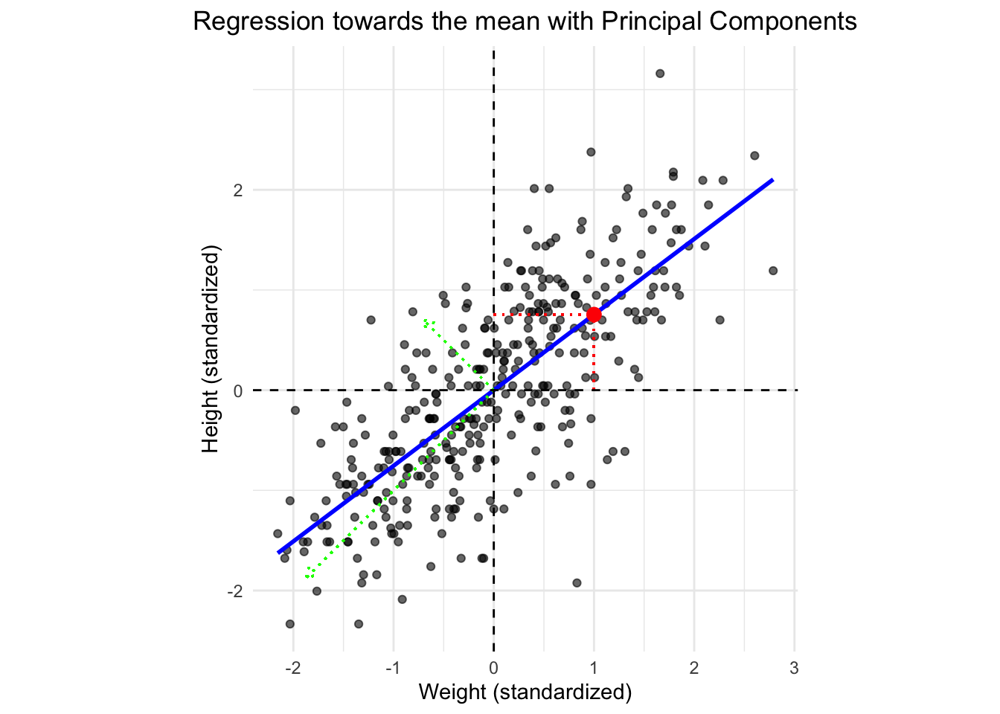
It would not be a good idea to fit a linear trend through this data, because we would not caupture the relationship adequately. The red line is a loess smothing line which is often used to capture non-linear relationships. The blue line is the usual line from classic linear regression (from the previous chapter). Which one describes the data more accurately? In this case it is obvious, a non-linear relationship is present and it might be a good idea to model it. Modeling the relationship with a linear trend leads to bad residuals with structure. We will demonstrate this in the freuqentist setting. Unfortunately, in more complex settings, with more predictors, it is not always so easy to see.
This time, we use the mean for the prior from the book (\(178 cm\)). The model equations are (see exercise 2):
\[\begin{eqnarray*} h_i &\sim& \text{Normal}(\mu_i, \sigma) \\ \mu_i &=& \alpha + \beta_1 x_i + \beta_2 x_i^2 \\ \alpha &\sim& \text{Normal}(178, 20) \\ \beta_1 &\sim& \text{Log-Normal}(0, 1) \\ \beta_2 &\sim& \text{Normal}(0, 1) \\ \sigma &\sim& \text{Uniform}(0, 50) \end{eqnarray*}\]
The prior for \(\beta_1\) is log-normal, because we can reasonably assume the the overall linear trend is positive. The prior for \(\beta_2\) is normal, because we are not so sure about the sign yet. If we thought back to our school days to the topic of “curve discussion” or parabolas, we could probably also assume that \(\beta_2\) is negative. But, data will show.
How can we interpret the model equations? The model assumes that the expected height \(\mu_i\) of a person \(i\) depends non-linearly (quadratically) on the (standardized) weight \(x_i\) of the person. We are in the business of mean-modeling. The prior for \(\sigma\) is uniform as before. The prior for \(\alpha\) is normal with mean \(178\) and standard deviation \(20\) because this is what we can expect from body heights in our experience.
Let’s fit the model:
We standardize the weight again and add the squared weights to the data set. Standardizing the predictors is a good idea, especially in polynomial regression since squares and cubes of large numbers can get huge and cause numerical problems.
Let’s fit the model with the quadratic term for weight:
# Standardize weight
d$weight_s <- (d$weight - mean(d$weight)) / sd(d$weight)
# Square of standardized weight
d$weight_s2 <- d$weight_s^2
m4.1 <- quap(
alist(
height ~ dnorm(mu, sigma),
mu <- a + b1*weight_s + b2*weight_s^2,
a ~ dnorm(178, 20),
b1 ~ dnorm(0, 10),
b2 ~ dnorm(0, 10),
sigma ~ dunif(0, 50)
), data = d)
precis(m4.1)## mean sd 5.5% 94.5%
## a 146.672739 0.3736465 146.075580 147.269898
## b1 21.397637 0.2898827 20.934348 21.860925
## b2 -8.419933 0.2813308 -8.869554 -7.970312
## sigma 5.750550 0.1743749 5.471865 6.029235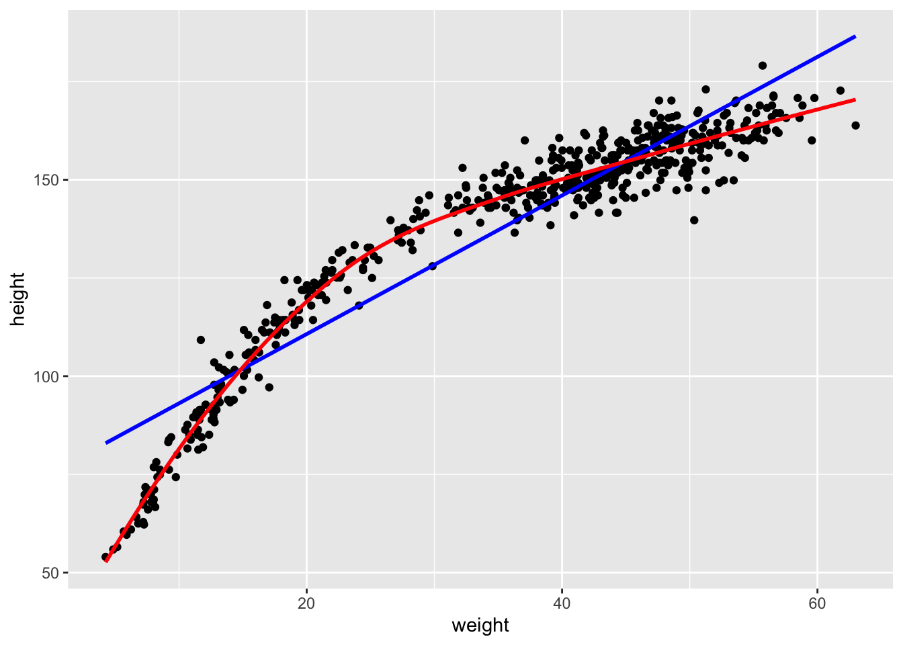
\(\beta_2\) is indeed negative. In the estimate-plot above I have left out the intercept \(\alpha\) to make the other coefficients more visible. As you can see, the credible intervals are very tight. Using prior knowledge an data, the model is very sure about the coefficients. We get our joint distribution of the four model parameters. Let’s look at the fit using the mean estimates of the posterior distribution:
# Summarize the model parameters
model_summary <- precis(m4.1)
params <- as.data.frame(model_summary)
# Extract parameter values
a <- params["a", "mean"] # Intercept
b1 <- params["b1", "mean"] # Coefficient for standardized weight
b2 <- params["b2", "mean"] # Coefficient for squared standardized weight
# Generate a sequence of standardized weights for the fitted curve
weight_seq <- seq(min(d$weight_s), max(d$weight_s), length.out = 200)
# Calculate the fitted values using the quadratic equation
height_fitted <- a + b1 * weight_seq + b2 * weight_seq^2
# Plot the scatterplot
plot(d$weight_s, d$height, pch = 16, col = "blue",
xlab = "Standardized Weight", ylab = "Height (cm)",
main = "Scatterplot with Fitted Curve (Standardized Weight)")
# Add the fitted curve
lines(weight_seq, height_fitted, col = "red", lwd = 2)
# Add a legend
legend("topright", legend = c("Observed data", "Fitted curve"),
col = c("blue", "red"), pch = c(16, NA), lty = c(NA, 1), lwd = 2)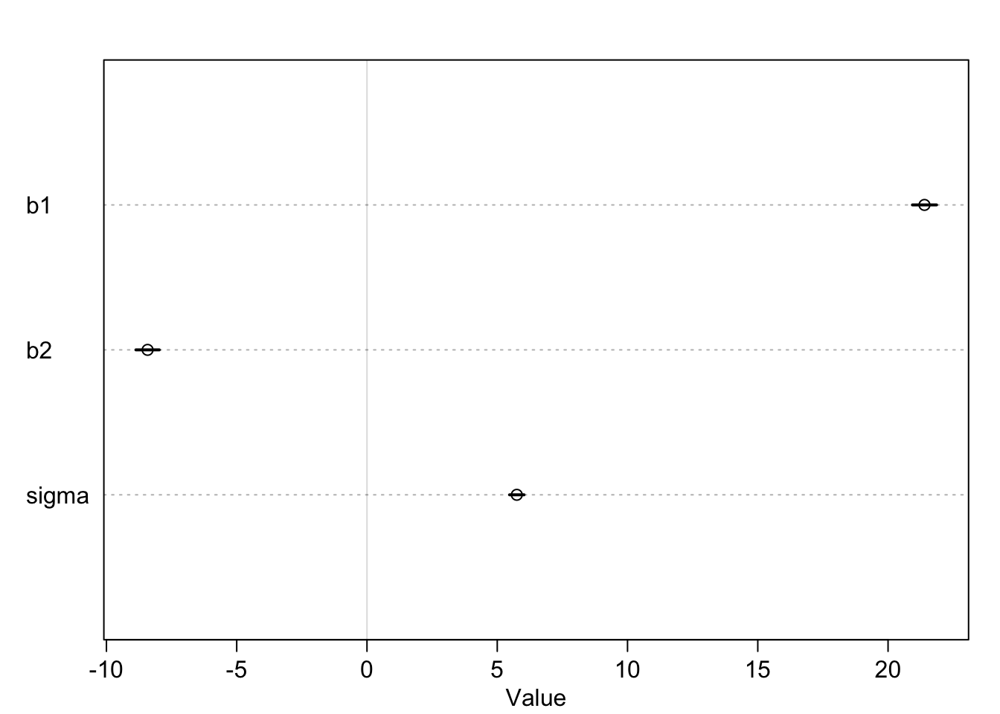
# ======== Simulate Heights from Posterior ========
# Prepare new data with the same number of rows as the original data
new_data <- data.frame(weight_s = d$weight_s, weight_s2 = d$weight_s2)
# Simulate height values from the posterior (same number as original data)
sim_heights <- sim(m4.1, data = new_data, n = nrow(d)) # Posterior samples
# Extract random samples from simulated heights
height_samples <- apply(sim_heights, 2, function(x) sample(x, 1))
# ======== Plot Observed vs. Simulated Heights ========
# Plot observed data
plot(d$weight_s, d$height, pch = 16, col = "blue",
xlab = "Standardized Weight", ylab = "Height (cm)",
main = "Observed vs. Simulated Heights")
# Add simulated height points
points(d$weight_s, height_samples, pch = 16, col = "red")
# Add legend
legend("topright", legend = c("Observed Data", "Simulated Data"),
col = c("blue", "red"), pch = c(16, 16))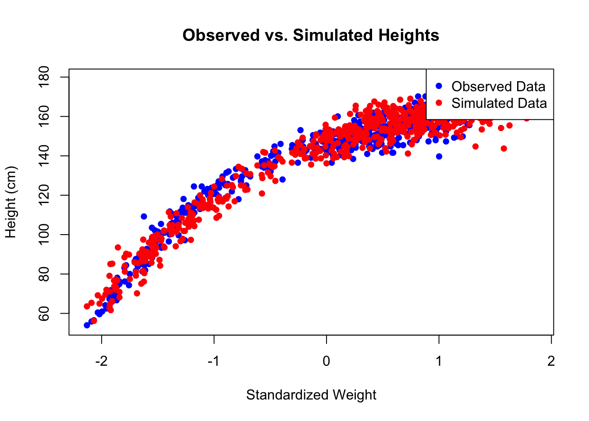
This fits much better than the linear model without the quadratic term. In the book, there is also a polynomial regression with a cubic term for weight. The second plot shows the original heights and simulated heights from the posterior distribution in one plot. This fits quite well. Maybe this fits even better (see exercise 1).
4.1.3 Adding another predictor to the model
Since the !Kung San data set has already such a high \(R^2\) with the quadratic term (and possibly higher with the cubic term), we will use the created data set from below in the frequentist setting to estimate the coefficients of the model with two predictors here as well. We have the true but (usually) unknown data generating mechnisms (for didactic reasons).
We use rather uniformative priors and fit the model using quap:
library(rethinking)
set.seed(123)
n <- 100
X1 <- rnorm(n, 0, 5)
X2 <- rnorm(n, 0, 5)
Y <- 10 + 0.5 * X1 + 1 * X2 + rnorm(n, 0, 2) # true model
df <- data.frame(X1 = X1, X2 = X2, Y = Y)
# fit model
m4.2 <- quap(
alist(
Y ~ dnorm(mu, sigma),
mu <- a + b1*X1 + b2*X2,
a ~ dnorm(10, 10),
b1 ~ dnorm(0, 10),
b2 ~ dnorm(0, 10),
sigma ~ dunif(0, 50)
), data = df)
precis(m4.2)## mean sd 5.5% 94.5%
## a 10.2700227 0.18934442 9.9674137 10.5726316
## b1 0.4467278 0.04131434 0.3806995 0.5127561
## b2 1.0095082 0.03899992 0.9471788 1.0718377
## sigma 1.8738833 0.13250803 1.6621099 2.08565674.1.3.1 Checking model assumptions
Andrew Gelman mentions in some of his talks (see here for more details) that many Bayesians he met do not check their models, since they reflect subjective probability. As I said in the introduction, one should not be afraid to check model predictions against the observed and probably new data. If a model for predicting BMI performs much worse on a new data set, we should adapt. We do not ask the question if a model is true or false, but if it is useful or how badly the model assumptions are violated.
For further, more detailed information on model checking, refer to chapter 6 of Gelman’s book.
Anyhow, we plot two posterior predictive checks here. We test the model within the same data set. In order to do this, we create new observations by drawing from the posterior distribution and compare these with the acutally observed values. This is called posterior predictive checks.
First, we plot the observed \(Y\) values against the predicted \(Y\) values (\(=\hat{Y}\)) from the model (as in Statistical rethinking, Chapter 5). Although these practically never lie on the line \(y=x\), they should be sufficiently close to it. We could also compare these two plots with the mean-model (see exercise 6).
# 1) Posterior predictive checks Y vs Y_hat
# see Statstical Rethinking p 138.
# call link without specifying new data
# so it uses the original data
mu <- link(m4.2)
# summarize samples accross cases
mu_mean <- apply(mu, 2, mean)
mu_PI <- apply(mu, 2, PI, prob = 0.89)
# simulate observations
# again, no new data, so uses original data
D_sim <- sim(m4.2, n = 1e4)
D_PI <- apply(D_sim, 2, PI, prob = 0.89)
plot(mu_mean ~ df$Y, col = rangi2, ylim = range(mu_PI),
xlab = "Observed Y", ylab = "Model-Predicted Y")
abline(a = 0, b = 1, lty = 2)
for(i in 1:nrow(df)) lines(rep(df$Y[i], 2), mu_PI[,i], col = rangi2)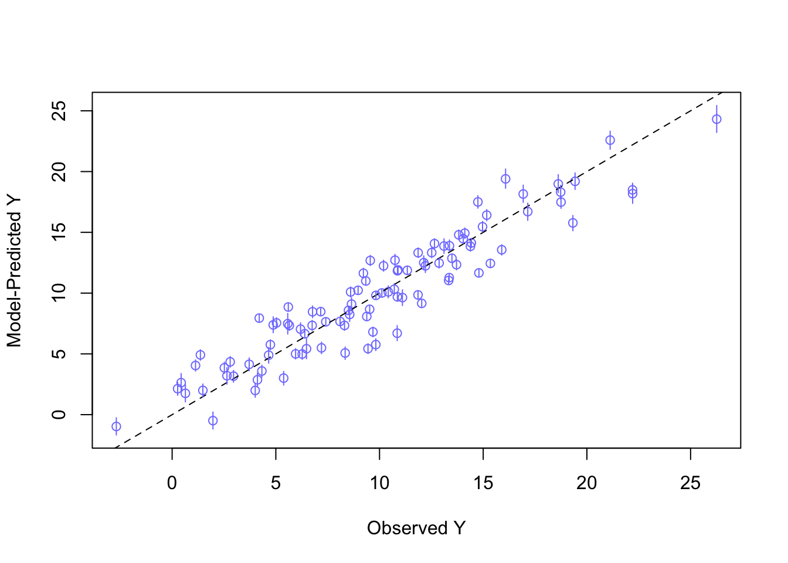
As we can see, the model fits the data quite well. The points are close to the dashed line (\(y=x\)). No under- or overestimation is visible. The model seems to capture the relationship between the predictors \(X_1\) and \(X_2\) and the dependent variable \(Y\) quite well - at least in a predictive sense. If there were patches of data points above or below the dashed line, we would probably have to reconsider the model definition and think about why these points are not captured by the model.
Next, we plot the posterior predictive plots analog to the upper left in the check_model output.
##
## Attaching package: 'scales'## The following object is masked from 'package:purrr':
##
## discard## The following object is masked from 'package:readr':
##
## col_factor# 2) Posterior predictive densities
# Simulate observations using the posterior predictive distribution
D_sim <- sim(m4.2, n = 1e4) # Generate 10,000 simulated datasets
# Calculate densities for all samples
densities <- apply(D_sim, 1, density)
# Find the maximum density value for setting the y-axis limits
max_density <- max(sapply(densities, function(d) max(d$y)))
# Create the density plot with predefined ylim
plot(NULL, xlim = range(df$Y), ylim = c(0, max_density),
xlab = "Y", ylab = "Density",
main = "Comparison of Observed and Predicted Densities")
# Add 100 posterior predictive density lines
set.seed(42) # For reproducibility
n_lines <- 100
samples <- sample(1:1e4, n_lines) # Randomly sample 100 posterior predictive datasets
for (s in samples) {
lines(density(D_sim[s, ]), col = alpha("lightblue", 0.3), lwd = 1)
}
# Add the density line for the observed Y values
obs_density <- density(df$Y)
lines(obs_density$x, obs_density$y, col = "green", lwd = 2)
# Add legend
legend("topright", legend = c("Posterior Predictive Densities", "Observed Density"),
col = c("lightblue", "green"), lty = 1, lwd = c(1, 2))
The light blue lines show distributions of model predicted \(Y\) values. The green line shows the distribution of the observed \(Y\) values. As we can see, there seem to be no systematic differences between the observed and predicted values. The model seems to capture the relationship well. If we see systematic deviations here, we need to reconsider the model definition.
Example: If you want to predict pain (\(Y\) variable) and you have a lot of zeros (pain-free participants) you will probably see a discrepancy between the observed and predicted values in this plot. What could you do? You could use a two step process (model the probability that a person is pain-free and then model the pain intensity for the people who have pain) or use a different model (like a zero-inflated model).
Note that we did not explicitely assume normally distributed errors in the model definition above, so we won’t check this here but in the Frequentist framework below.
4.2 Linear regression with 2 predictors in the Frequentist Framework
To reiterate from the last chapter: In full, the classical linear regression model can be written as (see p. 21-22 in Westfall):
\[ Y_i|X_i = x_i \sim_{independent} N(\beta_0 + \beta_1 x_{i1} + \dots \beta_k x_{ik},\sigma^2)\] for \(i = 1, \dots, n\).
The \(Y_i\) are independently normally distributed conditioned on the predictors having the values \(X_i = x_i\). Each conditional distribution has an expected value (\(\mu\)) that is a linear function of the predictors and a constant variance \(\sigma^2\).
If the assumptions of the classical linear regression model are met, the least squares estimators (OLS) are the best (smallest variance) linear unbiased (on average correct) estimators - so-called: BLUE - of the parameters.
4.2.1 Adding a transformed predictor to the model
No, let’s fit the same model as above in the Bayesian framework.
The model is:
\[height_i = \alpha + \beta_1 weight_i + \beta_2 weight_i^2 + \varepsilon_i\] whereas \[\varepsilon_i \sim N(0, \sigma)\]
And if you build the expectation on both sides for fixed \(weight_i\), you get:
\[\mathbb{E}(height_i|weight_i) = \alpha + \beta_1 weight_i + \beta_2 weight_i^2\]
The last line means, the expected height of a person given a certain weight depends quadratically on the weight. The error term \(\varepsilon_i\) is on average zero, hence it goes away here. Remember the law of large numbers: The sample mean \(\bar{\varepsilon_i}\) approaches the expected value \(\mathbb{E}(\varepsilon_i)=0\) as the sample size increases. If you drew many samples (from the true model) and average over the error terms, the average will approach zero. Think of this animated graph if you need a dynamic image of the regression model. The weights are considered fixed and therefore do not change when building the expectation.
We are looking for fixed, but unknown, parameters \(\alpha\), \(\beta_1\), \(\beta_2\) and \(\sigma\). The fixed \(\sigma\) indicates that the observations wiggle around the expected value equally strong not matter which weight we have. This is called homoscedasticity.
Let’s fit the model using the lm function in R which uses
least squares to estimate the parameters.
At this point I could torture you with matrix algebra
and show you the normal equations for linear regression,
but I will spare you for now.
Note that the least squares algorithm for fitting the curve works for all
kinds of functional forms. For example, we could also fit an exponential curve using the same
technique (see exercise 9).
# scale weight
d$weight_s <- scale(d$weight)
# Fit the model
m4.2 <- lm(height ~ weight_s + I(weight_s^2), data = d)
summary(m4.2)##
## Call:
## lm(formula = height ~ weight_s + I(weight_s^2), data = d)
##
## Residuals:
## Min 1Q Median 3Q Max
## -19.9689 -3.9794 0.2364 3.9262 19.5182
##
## Coefficients:
## Estimate Std. Error t value Pr(>|t|)
## (Intercept) 146.6604 0.3748 391.30 <2e-16 ***
## weight_s 21.4149 0.2908 73.64 <2e-16 ***
## I(weight_s^2) -8.4123 0.2822 -29.80 <2e-16 ***
## ---
## Signif. codes: 0 '***' 0.001 '**' 0.01 '*' 0.05 '.' 0.1 ' ' 1
##
## Residual standard error: 5.766 on 541 degrees of freedom
## Multiple R-squared: 0.9565, Adjusted R-squared: 0.9564
## F-statistic: 5952 on 2 and 541 DF, p-value: < 2.2e-16## [1] 138.2636## 3 % 97 %
## (Intercept) 145.954018 147.366836
## weight_s 20.866788 21.962979
## I(weight_s^2) -8.944251 -7.880337See ?I in R. This command is used so that R knows that it should
treat the “^2” as “square” and not as formula syntax.
We could also create a new variable as before. Whatever you prefer.
4.2.1.1 Interpretation of output and coefficients
- The intercept \(\alpha\) is the model-predicted height of a person of average weight (\(weight_s=0\) for a person of average weight). Note that this is not equal to the average height (\(138.2636~cm\)) of the people in the data set (see exercise 12).
- The residuals have range from \(-19.97\) to \(19.51\). So, the model maximally overestimates the heights by \(19.97\) cm and underestimates by \(19.51\) cm. These numbers are plausible when you look at the scatterplot with the fitted curve.
- The coefficients \(\beta_1\) and \(\beta_2\) agree with the Bayes estimates. Specifically, \(\beta_2\) is non-zero indicating curvature. You cannot directly interpret the coefficients as in the non-quadratic case since, for instance, you cannot change \(weight^2\) by one unit and hold \(weight\) constant at the same time. Refer to Peter Westfall’s book section 9.1. for all the details.
- If you like \(p\)-values: All the hypotheses that the coefficients are zero are rejected. The \(p\)-values are very small. The values of the test statistics can not be explained by chance alone. On the other hand, for at least \(\beta_1\) and and the global test this is not a surprise when you look at the scatterplot. After having fit many models, you would have guessed that all three parameters are solidly non-zero. The intercept is not zero since a person of average weight probably has non-zero height. \(\beta_1\) is non-zero since you can easily imagine a linear trend line with positive slope going through the data, and \(\beta_2\) is non-zero since there is clearly (non-trivial) curvature in the scatterplot.
- The \(R^2\) is a whopping \(0.96\) which could be a sign of overfitting, but in this case we conclude that the true relationship is caputured rather well. Overfitting would occur if our curve would rather fit the noise in the data than the underying trend.
4.2.1.2 Checking model assumptions
## Some of the variables were in matrix-format - probably you used
## `scale()` on your data?
## If so, and you get an error, please try `datawizard::standardize()` to
## standardize your data.
## Some of the variables were in matrix-format - probably you used
## `scale()` on your data?
## If so, and you get an error, please try `datawizard::standardize()` to
## standardize your data.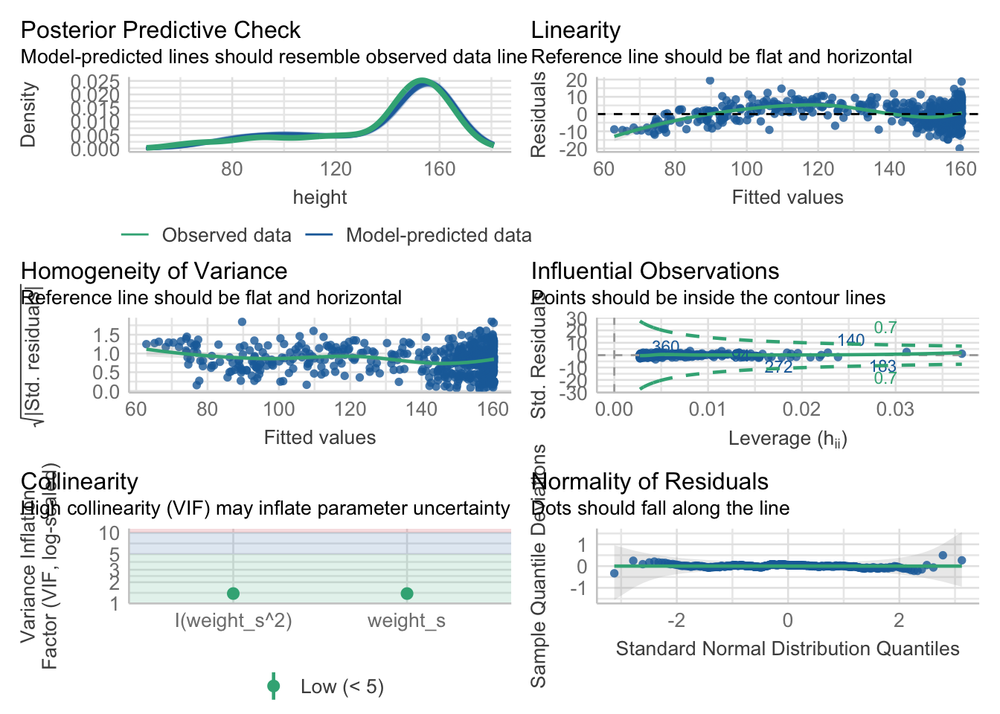
If we want to be perfectionists, we could remark that (upper right plot) in the lower fitted values the residuals are more negative, meaning that the model overestimates the heights in this region. In the middle region the model underestimates a bit and we can see a positive tendency in the residuals. Apart from that, the diagnostic plots look excellent.
4.2.2 Adding another predictor to the model
Now, we add another predictor to the model. We use \(X_1\) and \(X_2\) simultaneously to predict \(Y\). We are now in the lucky situation that we can still visualize the situation in 3D. The regression line from simple linear regression becomes a plane. The vertical distances between the data points and the plane are the residuals. See here or here at the end for examples. Minimizing the sum of the squared errors gives again the estimates for the coefficients.
For demonstration purposes, we can create data ourselves with known coefficients. This is the same as above. This is the true model, which we usually do not know:
\[ Y_i = \beta_0 + \beta_1 X_{1i} + \beta_2 X_{2i} + \varepsilon_i\] \[ \varepsilon_i \sim N(0, \sigma^2)\] \[ \mathbb{E}(Y_i|X_1 = x_1; X_2 = x_2) = \beta_0 + \beta_1 x_1 + \beta_2 x_2\] \[ i = 1 \ldots n\]
for example:
\[ Y_i = 10 + 0.5 \cdot X_{1i} + 1 \cdot X_{2i} + \varepsilon_i\] \[ \varepsilon_i \sim N(0, 5)\] \[ \mathbb{E}(Y_i|X_1 = x_1; X_2 = x_2) = 10 + 0.5 x_1 + 1 x_2\] \[ i = 1 \ldots n\]
According to the model, the conditional expected value of \(Y_i\) given \(X_1 = x_1\) and \(X_2 = x_2\) is a linear function of \(x_1\) and \(x_2\). Note, that small letters are realized values of random variables. Also note, that in the expectation the error term goes away, since \(\mathbb{E}(\varepsilon_i) = 0\).
- If \(X_1\) increases by one unit, \(Y\) increases by \(0.5\) units on average (in expectation).
- If \(X_2\) increases by one unit, \(Y\) increases by \(1\) unit on average (in expectation).
- If \(X_1\) and \(X_2\) are zero, \(Y\) is \(10\) on average (in expectation).
Why in expectation? Because there is still the error term which makes the whole thing random! We can see that an increase in \(X_1\) does not influence the relationship between \(X_2\) and \(Y\). Hence, there is no interaction between \(X_1\) and \(X_2\) with respect to \(Y\).
Now lets’s draw 100 points from this model, fit the model and add the plane:
library(plotly)
set.seed(123)
n <- 100
X1 <- rnorm(n, 0, 5)
X2 <- rnorm(n, 0, 5)
Y <- 10 + 0.5 * X1 + 1 * X2 + rnorm(n, 0, 2)
d <- data.frame(X1 = X1, X2 = X2, Y = Y)
# Fit the model
m4.3 <- lm(Y ~ X1 + X2, data = d)
summary(m4.3)##
## Call:
## lm(formula = Y ~ X1 + X2, data = d)
##
## Residuals:
## Min 1Q Median 3Q Max
## -3.7460 -1.3215 -0.2489 1.2427 4.1597
##
## Coefficients:
## Estimate Std. Error t value Pr(>|t|)
## (Intercept) 10.27013 0.19228 53.41 <2e-16 ***
## X1 0.44673 0.04195 10.65 <2e-16 ***
## X2 1.00952 0.03960 25.49 <2e-16 ***
## ---
## Signif. codes: 0 '***' 0.001 '**' 0.01 '*' 0.05 '.' 0.1 ' ' 1
##
## Residual standard error: 1.903 on 97 degrees of freedom
## Multiple R-squared: 0.8839, Adjusted R-squared: 0.8815
## F-statistic: 369.1 on 2 and 97 DF, p-value: < 2.2e-16# Create a grid for the plane
X1_grid <- seq(min(d$X1), max(d$X1), length.out = 20)
X2_grid <- seq(min(d$X2), max(d$X2), length.out = 20)
grid <- expand.grid(X1 = X1_grid, X2 = X2_grid)
# Predict the values for the grid
grid$Y <- predict(m4.3, newdata = grid)
# Convert the grid into a matrix for the plane
plane_matrix <- matrix(grid$Y, nrow = length(X1_grid), ncol = length(X2_grid))
# Create the interactive 3D plot
plot_ly() %>%
add_markers(
x = d$X2, y = d$X1, z = d$Y,
marker = list(color = "blue", size = 5),
name = "Data Points"
) %>%
add_surface(
x = X1_grid, y = X2_grid, z = plane_matrix,
colorscale = list(c(0, 1), c("red", "pink")),
showscale = FALSE,
opacity = 0.7,
name = "Fitted Plane"
) %>%
plotly::layout(
scene = list(
xaxis = list(title = "X1"),
yaxis = list(title = "X2"),
zaxis = list(title = "Y")
),
title = "Interactive 3D Scatterplot with Fitted Plane"
)This is, of course, a very idealized situation. There is no curvature in the plane, no interaction, no outliers, no heteroscadasticity. It’s the simplest case of multiple regression with 2 predictors. Reality is - usually - more complicated.
Let’s look at the summary output and check model assumptions:
##
## Call:
## lm(formula = Y ~ X1 + X2, data = d)
##
## Residuals:
## Min 1Q Median 3Q Max
## -3.7460 -1.3215 -0.2489 1.2427 4.1597
##
## Coefficients:
## Estimate Std. Error t value Pr(>|t|)
## (Intercept) 10.27013 0.19228 53.41 <2e-16 ***
## X1 0.44673 0.04195 10.65 <2e-16 ***
## X2 1.00952 0.03960 25.49 <2e-16 ***
## ---
## Signif. codes: 0 '***' 0.001 '**' 0.01 '*' 0.05 '.' 0.1 ' ' 1
##
## Residual standard error: 1.903 on 97 degrees of freedom
## Multiple R-squared: 0.8839, Adjusted R-squared: 0.8815
## F-statistic: 369.1 on 2 and 97 DF, p-value: < 2.2e-16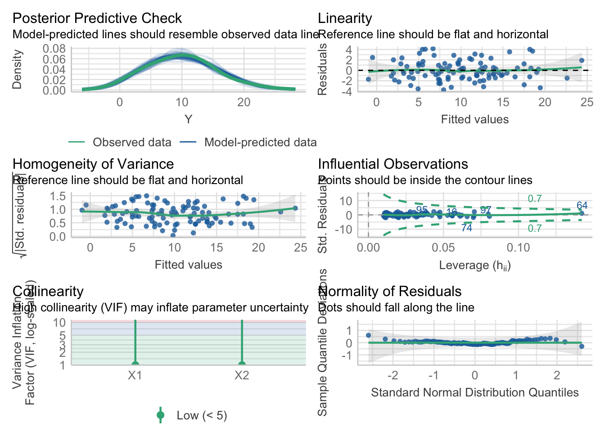
We could repeat this simulation to get a feeling for the variability. The posterior predictive checks look nice. In this case, we know that the model is true.
4.2.2.1 Adding variables to the model and why
This is a very complex question. We will go into it in later chapters and the next course (Methodenvertiefung). At this point we can say this: We add variables to the model (and probably use other models apart from linear regression) depending on the goal at hand (prediction or explanation). Prediction seems to be easier than explanation. For instance, within linear models and just a handful of predictors, one can even brute force the problem by searching through all subsets of predictors. If that is not possible, one could use clever algortithms, like best subest selection.
- What is not a good idea is to throw all variables into the model and hope for the best - especially if we want to learn the true relationships between the variables.
- What is also not a good idea is to select variables depending on the \(p\)-values of the coefficients (Westfall Chapter 11).
- Leaving variables out, that are important, can lead to biased estimates of the coefficients (omitted variable bias).
- Importantly, also adding variables can hurt conclusions from the model (see Statistical Rethinking 6.2).
4.2.3 Interaction Term \(X_1 \times X_2\)
I recommend reading the excellent explanations about interactions in John Kruschke’s book Doing Bayesian Data Analysis, 15.2.2 und 15.2.3. Peter Westfall also has a nice explanation in his book in section 9.3.
Our statistical model is now:
\[ Y_i = \beta_0 + \beta_1 X_{1i} + \beta_2 X_{2i} + \mathbf{\beta_3 X_{1i} \times X_{2i}} + \varepsilon_i\] \[ \varepsilon_i \sim N(0, \sigma^2)\] \[ \mathbb{E}(Y_i|X_1 = x_1; X_2 = x_2) = \beta_0 + \beta_1 x_{1} + \beta_2 x_{2} + \beta_3 x_{1} \times x_{2}\] \[ i = 1 \ldots n\]
for example:
\[ Y_i = 10 + 0.5 \cdot X_{1i} + 1 \cdot X_{2i} + 0.89 \cdot X_{1i} \times X_{2i} + \varepsilon_i\] \[ \varepsilon_i \sim N(0, 5)\] \[ \mathbb{E}(Y_i|X_1 = x_1; X_2 = x_2) = 10 + 0.5 x_1 + 1 x_2 + 0.89 x_1 \times x_2\] \[ i = 1 \ldots n\]
The second equation states that the conditional expectation of \(Y_i\) given \(X_1=x_1\) and \(X_2=x_2\) is a function of \(x_1\) and \(x_2\) and their interaction \(x_1 \times x_2\) (i.e., the product). We are in a different situation now. Set for instance \(x_2\) to a certain value, say \(x_2 = 7\). Then the relationship (in expectation) between \(Y\) and \(X_1\) is:
\[ \mathbb{E}(Y_i|X_1 = x_1; X_2 = 7) = 10 + 0.5 x_1 + 1 \cdot 7 + 0.89 x_1 \cdot 7\] \[ \mathbb{E}(Y_i|X_1 = x_1; X_2 = 7) = 10 + (0.5 + 0.89 \cdot \mathbf{7}) \cdot x_1 + 1 \cdot 7\]
Depending on the value of \(x_2\), the effect of \(X_1\) on \(Y\) changes. Hence, \(X_2\) modifies the relationship between \(X_1\) and \(Y\), or stated otherwise, \(X_1\) and \(X_2\) interact with respect to \(Y\). Remember, the word effect is used in a strictly technical/statistical sense and not in a causal sense. It does not mean that if we do change \(X_1\) by one unit, \(Y\) will also change in an experiment. We are purely describing the relationship in an associative way. We will probably touch causality in a later chapter. Bayesian statistics and causal inference are gaining popularity. Hence, we should try to keep up.
Let’s draw 100 points from this model, fit the model and add the plane (see also exercise 4):
set.seed(123)
n <- 100
X1 <- rnorm(n, 0, 5)
X2 <- rnorm(n, 0, 5)
Y <- 10 + 0.5 * X1 + 1 * X2 + 0.89 * X1 * X2 + rnorm(n, 0, 5)
d <- data.frame(X1 = X1, X2 = X2, Y = Y)
# Fit the model
m4.4 <- lm(Y ~ X1 * X2, data = d)
summary(m4.4)##
## Call:
## lm(formula = Y ~ X1 * X2, data = d)
##
## Residuals:
## Min 1Q Median 3Q Max
## -9.360 -3.389 -0.543 2.949 11.583
##
## Coefficients:
## Estimate Std. Error t value Pr(>|t|)
## (Intercept) 10.70491 0.47888 22.354 < 2e-16 ***
## X1 0.40719 0.10834 3.759 0.000293 ***
## X2 1.03434 0.09881 10.468 < 2e-16 ***
## X1:X2 0.92182 0.02290 40.257 < 2e-16 ***
## ---
## Signif. codes: 0 '***' 0.001 '**' 0.01 '*' 0.05 '.' 0.1 ' ' 1
##
## Residual standard error: 4.734 on 96 degrees of freedom
## Multiple R-squared: 0.9476, Adjusted R-squared: 0.9459
## F-statistic: 578.1 on 3 and 96 DF, p-value: < 2.2e-16# Create a grid for the plane
X1_grid <- seq(min(d$X1), max(d$X1), length.out = 20)
X2_grid <- seq(min(d$X2), max(d$X2), length.out = 20)
grid <- expand.grid(X1 = X1_grid, X2 = X2_grid)
# Predict the values for the grid
grid$Y <- predict(m4.4, newdata = grid)
# Convert the grid into a matrix for the plane
plane_matrix <- matrix(grid$Y, nrow = length(X1_grid), ncol = length(X2_grid))
# Create the interactive 3D plot
plot_ly() %>%
add_markers(
x = d$X2, y = d$X1, z = d$Y,
marker = list(color = "blue", size = 5),
name = "Data Points"
) %>%
add_surface(
x = X1_grid, y = X2_grid, z = plane_matrix,
colorscale = list(c(0, 1), c("red", "pink")),
showscale = FALSE,
opacity = 0.7,
name = "Fitted Plane"
) %>%
plotly::layout(
scene = list(
xaxis = list(title = "X1"),
yaxis = list(title = "X2"),
zaxis = list(title = "Y")
),
title = "Interactive 3D Scatterplot with Fitted Plane"
)The term X1 * X2 is a shortcut for X1 + X2 + X1:X2 where X1:X2 is the interaction term.
R automatically includes the main effects of the predictors when an interaction
term is included (variable inclusion principle).
The true but usually unknown \(\beta\)s are estimated quite precisely.
4.2.3.1 Formal test for interaction
We could apply a formal test for the interaction term by model comparison.
The command anova(., .) would compare the two models and test if the change in the
residual sum of squares is statistically interesting.
## Analysis of Variance Table
##
## Model 1: Y ~ X1 + X2
## Model 2: Y ~ X1 * X2
## Res.Df RSS Df Sum of Sq F Pr(>F)
## 1 97 38468
## 2 96 2151 1 36316 1620.6 < 2.2e-16 ***
## ---
## Signif. codes: 0 '***' 0.001 '**' 0.01 '*' 0.05 '.' 0.1 ' ' 1One can show that the following test statistic is \(F\) distributed under the null hypothesis (that \(\beta_3=0\)):
\[ F = \frac{\left(RSS_{\text{Model 1}} - RSS_{\text{Model 2}}\right) / \left(df_{\text{Model 1}} - df_{\text{Model 2}}\right)}{RSS_{\text{Model 2}} / df_{\text{Model 2}}}\]
where \(RSS\) is the residual sum of squares, \(df\) are the degrees of freedom of the residual sum of squares for both models.
The output of the anova command shows us the residual degress of freedom (Res.Df)
of both models, the residual sum of squares errors of both models (RSS),
the sum of squared errors between model 1 and model 2 (Sum of Sq), the value of the
F-statistic and the \(p\)-value for the hypothesis, that the coefficient for
the interaction term is zero (\(\beta_3=0\)). Model 1 RSS has 97 degrees of freedom, since we have 100 data points
and 3 parameters to estimate (\(\beta_0, \beta_1, \beta_2\)). Model 2 has 96 degrees of freedom, since
we have 100 data points and 4 parameters to estimate (\(\beta_0, \beta_1, \beta_2, \beta_3\)).
Let’s verify the value of the \(F\) statistic:
RSS_model1 <- sum(residuals(m4.5)^2)
RSS_model2 <- sum(residuals(m4.4)^2)
df_model1 <- n - length(coef(m4.5))
df_model2 <- n - length(coef(m4.4))
F <- ((RSS_model1 - RSS_model2) / (df_model1 - df_model2)) / (RSS_model2 / df_model2)
F## [1] 1620.606## [1] 36316.28In the numerator of the \(F\) statistic, we have the change in the residual sum of squares
(from the small (model 1) model to the larger one (model 2), Sum of Sq)
per additional parameter in the model (one additional parameter \(\beta_3\)).
In the denominator, we have the residual sum of squares per residual degree of freedom of the larger model (model 2). Hence, in the numerator we have the information on how much better we get with respect to the number of variables added, and in the denominator we have information on how good the full model is with respect to its degrees of freedom.
The \(p\)-value is the probability of observing a value of the F statistic as extreme or more extreme than the one we observed, given that the null hypothesis is true. Here, the \(p\)-value is extremely small. So, statistically we would see an improvement in RSS which is not explainable by chance alone. But let’s be careful with \(p\)-values and especially with fixed cutoff values for \(\alpha\), which we will never use in this script. Even for a rather small effect \(\beta_3\), we would reject the null hypothesis, if only the sample size is large enough. Since a very small effect relative to \(\beta_1\) and \(\beta_2\) would probably not be of practical interest, one should be careful with looking at \(p\)-values alone. For instance, in Richard McElreath’s book Statistical Rethinking, there are no \(p\)-values at all. I like that.
If you again look at the comparison of the RSS between the two models, you would immediately see that the model with the interaction term is better (at least with respect to this metric). The difference is huge. We have already mentioned in the context of \(R^2\) not to overinterpret such metric, because RSS is monotonically descreasing with number of variables added and reaches zero when the number of variables equals the number of data points (see exercise 3).
4.2.4 Using an interaction plot to see a potential interaction
Chronologically before we include an interaction term in the model, we can use an interaction plot to see if there is a potential interaction between the predictors. We can just create a catorical predictor out of the continuous predictors. Just categorize the predictors into quartiles and plot the means of the dependent variable (\(Y\)). If the lines are parallel, there is probably no interaction. If the lines are not parallel, there might be an interaction.
n <- 100
X1 <- rnorm(n, 0, 5)
X2 <- rnorm(n, 0, 5)
Y <- 10 + 0.5 * X1 + 1 * X2 + 0.89 * X1 * X2 + rnorm(n, 0, 5)
d <- data.frame(X1 = X1, X2 = X2, Y = Y)
# Create categorical variables based on quartiles
d$X2_cat <- cut(d$X2,
breaks = quantile(d$X2, probs = c(0, 0.25, 0.5, 0.75, 1), na.rm = TRUE),
include.lowest = TRUE,
labels = c("Q1", "Q2", "Q3", "Q4"))
d$X1_cat <- cut(d$X1,
breaks = quantile(d$X1, probs = c(0, 0.25, 0.5, 0.75, 1), na.rm = TRUE),
include.lowest = TRUE,
labels = c("Q1", "Q2", "Q3", "Q4"))
# Create the interaction plot
interaction.plot(d$X2_cat, d$X1_cat, d$Y)
There seems to be an interaction of the predictors with respect to \(Y\). The lines are not parallel. If there was no interaction, the change in \(Y\) with respect to \(X_2\) would be the same for all levels of \(X_1\). This seems not to be the case here. See exercise 5.
If we had one or both predictors already categorical, we would not have to discretize them before.
4.2.5 Simpsons Paradox
The Simpsons paradox is a phenomenon, in which a trend appears in several different groups of data but disappears or reverses when these groups are combined. I agree with the criticism that this is not really a paradox but a failure to consider confounding variables adequately. Let’s quickly invent an example. We are interested in the relationship hours of muscle training and strength (not based on evidence) in children vs. adults. Within both groups there will be an increasing relationship. The more training, the more muscle strength. But if we combine the groups, we will see a decreasing relationship.
library(tidyverse)
n <- 100
age <- c(rep("child", n/2), rep("adult", n/2))
training <- c(rnorm(n/2, 0, 5) + 30, rnorm(n/2, 0, 5)+ 10)
strength <- c(
10 + 0.5 * training[1:(n/2)] + rnorm(n/2, 0, 2), # For children
25 + 0.5 * training[(n/2 + 1):n] + rnorm(n/2, 0, 2) # For adults
)
d <- data.frame(age = age, training = training, strength = strength)
ggplot(d, aes(x = training, y = strength, color = age)) +
geom_point() +
geom_smooth(method = "lm", se = FALSE) + # Group-specific regression lines
geom_smooth(data = d, aes(x = training, y = strength),
method = "lm", se = FALSE, color = "black", linetype = "dashed", linewidth = 1.2) + # Overall regression line
labs(title = "Regression Lines for Training and Strength",
x = "Training",
y = "Strength") +
theme_minimal() +
theme(plot.title = element_text(hjust = 0.5))## `geom_smooth()` using formula = 'y ~ x'
## `geom_smooth()` using formula = 'y ~ x'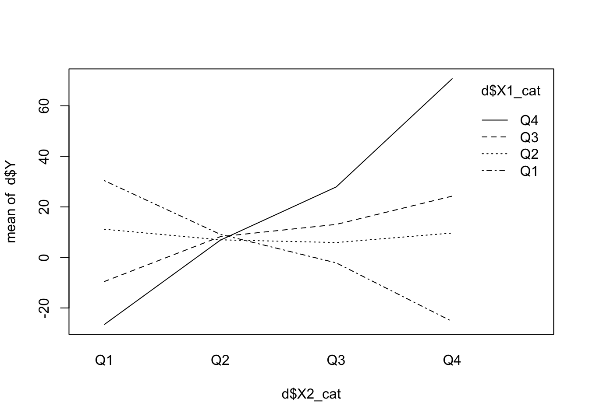
- Group-Specific Trends:
- In the group of children (blue line), strength increases with training, as indicated by the positive slope of the regression line.
- Similarly, in the group of adults (red line), strength also increases with training.
- Overall Trend:
- When both groups are combined and the categorical variable age is neglected, the overall regression line (black, dashed) shows a negative slope, suggesting that strength decreases with training.
- This overall trend is opposite to the trends observed within the individual groups.
- Why Does This Happen?
- This paradox occurs because the relationship between the grouping variable (
age) and the independent variable (training) creates a confounding effect. - In this case: Children tend to have higher training values overall, while adults tend to have lower training values. Age is associated with both strength and training and is therefore a confounder in the relationship between training and strength. Not adjusting (=including it in the regression model as predictor) for age leads to a misleading association.
- This paradox occurs because the relationship between the grouping variable (
This (fictitious) example shows that throwing variables into a multiple regression model without thinking about it, is not a good idea.
4.3 What happens when you just throw variables into multiple regression?
This sub-chapter is important. I can guarantee you that not too many applied scientists using regression models know about this.
A first taste of causality.
Richard McElreath has 3 cool examples on github that show what happens in the context of explanation if you include variables the wrong way and explains this in a video.
We will look at these below - the pipe, the fork and the collider. These are causal graphs showing the relationships between the variables. One is interested in the effect of X on Y. In this case, it is truly an effect, since we create the models in such a way that changing one variable, changes the other - which is indicated by an arrow in the graph. These graphs are called DAGs - directed acyclic graphs. Directed because of the arrows, acyclic because there are no cycles in the graph. One nice tool for drawing them is dagitty, which is also implemented in R. The online drawing tool is handy.
Note: Not only can it hurt to add variables to the model in an explanatory (causal) context, but also in a predictive context. The model can become unstable and the predictions can become worse. This is called overfitting.
4.3.1 Pipe
In this setting \(X\) is associated with \(Z\) and \(Z\) is associated with \(Y\). \(X\) and \(Y\) are not directly associated, but through \(Z\) (see graph below). If we condition on \(Z\), the association between \(X\) and \(Y\) disappears. This means, if we know the value of \(Z\), \(X\) does not give us any additional information about \(Y\).
This can be seen in the scatterplot: Once we are within \(Z=0\) (black dots) or \(Z=1\) (red dots), \(X\) does not give us any information about \(Y\), i.e., the point cloud is horizontal and there is no correlation.
The inv_logit function is the inverse of the logit function.
It assigns higher probability of \(Z\) being \(1\) if X has a higher value.
Let’s plot this for understanding:
x <- seq(-3, 3, 0.1)
plot(x, inv_logit(x), type = "l", col = "blue", lwd = 2, xlab = "X", ylab = "P(Z=1|X)")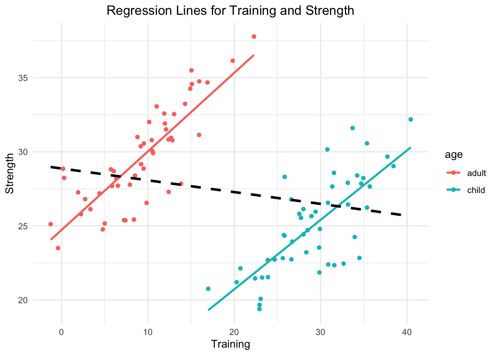
Higher \(X\) values lead to higher probabilities of \(Z=1\). As you can see, more red dots are on the right side of the scatterplot below.
Now to the pipe and a mini simulation for it:
##
## Attaching package: 'ggdag'## The following object is masked from 'package:stats':
##
## filterdag <- dagitty( 'dag {
X -> Z -> Y
}' )
dagitty::coordinates( dag ) <-
list( x=c(X=0, Y=2, Z=1),
y=c(X=0, Y=0, Z=0) )
ggdag(dag) +
theme_dag()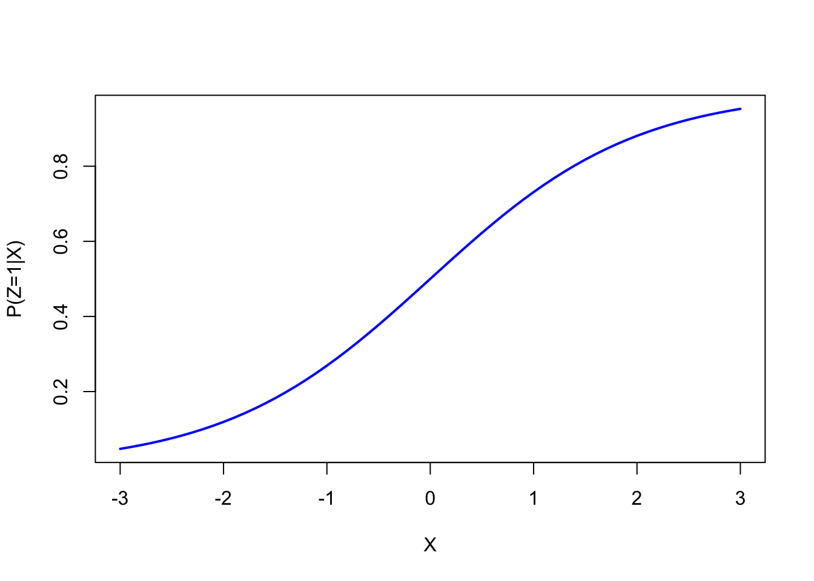
a <- 0.7
cols <- c( col.alpha(1,a) , col.alpha(2,a) )
# pipe
# X -> Z -> Y
N <- 1000
X <- rnorm(N)
Z <- rbern(N,inv_logit(X))
Y <- rnorm(N,(2*Z-1))
plot( X , Y , col=cols[Z+1] , pch=16 )
abline(lm(Y[Z==1]~X[Z==1]),col=2,lwd=3)
abline(lm(Y[Z==0]~X[Z==0]),col=1,lwd=3)
abline(lm(Y~X),lwd=3,lty=3)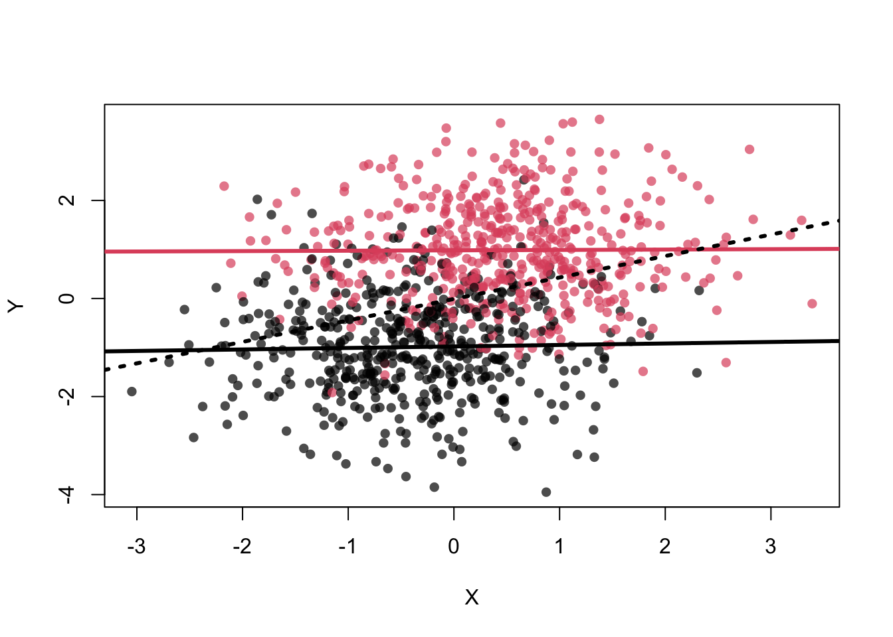
## [1] 0.007540748## [1] 0.02629344Or in the framework of Simpsons paradox:
library(rethinking)
N <- 1000
X <- rnorm(N)
Z <- rbern(N,inv_logit(X))
Y <- rnorm(N,(2*Z-1))
mod1 <- lm(Y ~ X) # without conditioning on Z
summary(mod1)##
## Call:
## lm(formula = Y ~ X)
##
## Residuals:
## Min 1Q Median 3Q Max
## -4.7717 -0.8634 -0.0037 0.9204 3.5437
##
## Coefficients:
## Estimate Std. Error t value Pr(>|t|)
## (Intercept) -0.00123 0.04210 -0.029 0.977
## X 0.46041 0.04296 10.718 <2e-16 ***
## ---
## Signif. codes: 0 '***' 0.001 '**' 0.01 '*' 0.05 '.' 0.1 ' ' 1
##
## Residual standard error: 1.331 on 998 degrees of freedom
## Multiple R-squared: 0.1032, Adjusted R-squared: 0.1023
## F-statistic: 114.9 on 1 and 998 DF, p-value: < 2.2e-16##
## Call:
## lm(formula = Y ~ X + Z)
##
## Residuals:
## Min 1Q Median 3Q Max
## -3.2979 -0.6399 0.0011 0.7047 2.8701
##
## Coefficients:
## Estimate Std. Error t value Pr(>|t|)
## (Intercept) -0.98781 0.04662 -21.190 <2e-16 ***
## X 0.02121 0.03542 0.599 0.549
## Z 1.97980 0.06941 28.523 <2e-16 ***
## ---
## Signif. codes: 0 '***' 0.001 '**' 0.01 '*' 0.05 '.' 0.1 ' ' 1
##
## Residual standard error: 0.9883 on 997 degrees of freedom
## Multiple R-squared: 0.5062, Adjusted R-squared: 0.5052
## F-statistic: 511 on 2 and 997 DF, p-value: < 2.2e-16Adding \(Z\) to the model (i.e., conditioning on \(Z\)) makes the coefficient for \(X\) disappear. Knowing \(Z\) means that \(X\) does not give us any additional information about \(Y\). See exercise 7.
\(Z\) is also called a mediator.
We could easily verify that \(Z\) constitutes a mediator by using Baron and Kenny’s 1986 approach (see Wiki):
##
## Call:
## lm(formula = Y ~ X)
##
## Residuals:
## Min 1Q Median 3Q Max
## -4.7717 -0.8634 -0.0037 0.9204 3.5437
##
## Coefficients:
## Estimate Std. Error t value Pr(>|t|)
## (Intercept) -0.00123 0.04210 -0.029 0.977
## X 0.46041 0.04296 10.718 <2e-16 ***
## ---
## Signif. codes: 0 '***' 0.001 '**' 0.01 '*' 0.05 '.' 0.1 ' ' 1
##
## Residual standard error: 1.331 on 998 degrees of freedom
## Multiple R-squared: 0.1032, Adjusted R-squared: 0.1023
## F-statistic: 114.9 on 1 and 998 DF, p-value: < 2.2e-16##
## Call:
## lm(formula = Z ~ X)
##
## Residuals:
## Min 1Q Median 3Q Max
## -0.97876 -0.40728 -0.00555 0.41502 1.09581
##
## Coefficients:
## Estimate Std. Error t value Pr(>|t|)
## (Intercept) 0.49832 0.01425 34.96 <2e-16 ***
## X 0.22184 0.01454 15.25 <2e-16 ***
## ---
## Signif. codes: 0 '***' 0.001 '**' 0.01 '*' 0.05 '.' 0.1 ' ' 1
##
## Residual standard error: 0.4507 on 998 degrees of freedom
## Multiple R-squared: 0.189, Adjusted R-squared: 0.1882
## F-statistic: 232.6 on 1 and 998 DF, p-value: < 2.2e-16##
## Call:
## lm(formula = Y ~ X + Z)
##
## Residuals:
## Min 1Q Median 3Q Max
## -3.2979 -0.6399 0.0011 0.7047 2.8701
##
## Coefficients:
## Estimate Std. Error t value Pr(>|t|)
## (Intercept) -0.98781 0.04662 -21.190 <2e-16 ***
## X 0.02121 0.03542 0.599 0.549
## Z 1.97980 0.06941 28.523 <2e-16 ***
## ---
## Signif. codes: 0 '***' 0.001 '**' 0.01 '*' 0.05 '.' 0.1 ' ' 1
##
## Residual standard error: 0.9883 on 997 degrees of freedom
## Multiple R-squared: 0.5062, Adjusted R-squared: 0.5052
## F-statistic: 511 on 2 and 997 DF, p-value: < 2.2e-16Both coefficients for \(X\) are “significant” in steps 1 and 2. The coefficients for \(Z\) in step 3 is “significant” and the coefficient for \(X\) is smaller compared to step 1. And not to forget: the very small \(p\)-values are strongly related to the very large smaple size and a strict cutoff (\(\alpha = 0.05\)) makes no sense.
Example: Hours of studying is associated with exam performance. This observation makes sense. A mediator in this context: understanding/knowledge. One could study for hours inefficiently with low levels of concentration and achieve low exam performance or one could study for a comparatively low number of hours and achieve good results. If we know that a person has gained the understanding/knowledge, the hours of studying do not give us any additional information with respect to exam performance.
4.3.2 Fork
In health science, this is the classical confounder.
\(Z\) is associated with \(X\) and \(Y\). \(X\) and \(Y\) are actually not associated (no arrow) but an association is
still shown: cor(X,Y) = 0.5097437.
But if we condition on \(Z\), the association between \(X\) and \(Y\) disappears. The assocation is
spurious in this case and adjusting for the confounder yields the correct result.
# fork
# X <- Z -> Y
dag <- dagitty( 'dag {
X <- Z -> Y
}' )
dagitty::coordinates( dag ) <-
list( x=c(X=0, Y=2, Z=1),
y=c(X=0.5, Y=0.5, Z=0) )
ggdag(dag) + theme_dag()
N <- 1000
Z <- rbern(N)
X <- rnorm(N,2*Z-1)
Y <- rnorm(N,(2*Z-1))
plot( X , Y , col=cols[Z+1] , pch=16 )
abline(lm(Y[Z==1]~X[Z==1]),col=2,lwd=3)
abline(lm(Y[Z==0]~X[Z==0]),col=1,lwd=3)
abline(lm(Y~X),lwd=3,lty=3)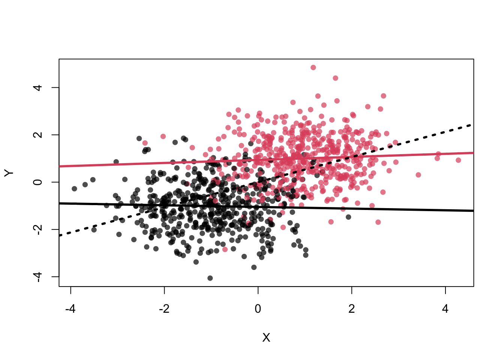
## [1] 0.05903899## [1] -0.03401368## [1] 0.5097437In the example, we know that \(Z\) is associated with both \(X\) and \(Y\) (per construction). As you can see in the definitions of \(X\), \(Y\) and \(Z\), \(X\) and \(Y\) would not be associated weren’t it for \(Z\).
Example: Carrying lighters is (spuriously) associated with lung cancer. Obviously, carrying a lighter does not cause lung cancer. Carrying a lighter is associated with smoking, since smokers need to light their cigarrettes and how often do non-smokers carry a lighter just for fun? Smoking is (causally) associated with lung cancer. If you just look at the association between carrying a ligher and lung cancer, you would find an association. But if you condition on smoking, the association disappears. See exercise 13.
4.3.3 Collider
This is rather interesting. \(X\) and \(Y\) are independently associated with \(Z\). This can be seen in the toy example below, where \(X\) and \(Y\) are used for the definition of \(Z\). \(Z\) is defined as a sum score of \(X\) and \(Y\). Sum scores are very often used in health sciences (and others). The higher the sum score, the higher the probability that \(Z=1\). Now, if we know the value of \(Z\), \(X\) and \(Y\) are negatively associated (see graph). The reason for this association is that there is a compensatory effect. In order to get a high score, you can either have a high value of \(X\) or \(Y\) or both. This induces the negative correlation.
# collider
# X -> Z <- Y
#dag
dag <- dagitty( 'dag {
X -> Z <- Y
}' )
dagitty::coordinates( dag ) <-
list( x=c(X=0, Y=2, Z=1),
y=c(X=0, Y=0, Z=1) )
ggdag(dag) + theme_dag()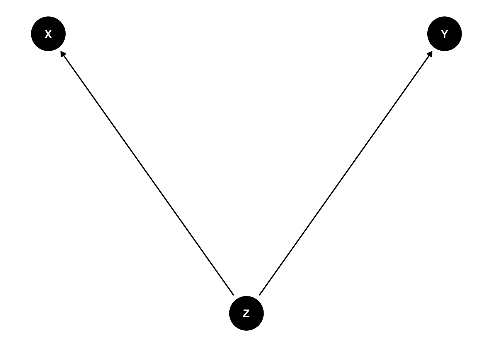
N <- 1000
X <- rnorm(N)
Y <- rnorm(N)
Z <- rbern(N,inv_logit(2*X+2*Y-2))
plot( X , Y , col=cols[Z+1] , pch=16 )
abline(lm(Y[Z==1]~X[Z==1]),col=2,lwd=3)
abline(lm(Y[Z==0]~X[Z==0]),col=1,lwd=3)
abline(lm(Y~X),lwd=3,lty=3)## [1] -0.326671## [1] -0.1768203##
## Call:
## lm(formula = Y ~ X)
##
## Residuals:
## Min 1Q Median 3Q Max
## -3.3892 -0.6079 -0.0269 0.6462 3.1038
##
## Coefficients:
## Estimate Std. Error t value Pr(>|t|)
## (Intercept) -0.01882 0.03055 -0.616 0.538
## X 0.04061 0.02948 1.378 0.169
##
## Residual standard error: 0.9662 on 998 degrees of freedom
## Multiple R-squared: 0.001898, Adjusted R-squared: 0.0008978
## F-statistic: 1.898 on 1 and 998 DF, p-value: 0.1686##
## Call:
## lm(formula = Y ~ X + Z)
##
## Residuals:
## Min 1Q Median 3Q Max
## -3.03484 -0.55761 0.02022 0.55813 2.41336
##
## Coefficients:
## Estimate Std. Error t value Pr(>|t|)
## (Intercept) -0.33787 0.03215 -10.51 < 2e-16 ***
## X -0.19963 0.02906 -6.87 1.13e-11 ***
## Z 1.21398 0.06840 17.75 < 2e-16 ***
## ---
## Signif. codes: 0 '***' 0.001 '**' 0.01 '*' 0.05 '.' 0.1 ' ' 1
##
## Residual standard error: 0.8427 on 997 degrees of freedom
## Multiple R-squared: 0.2415, Adjusted R-squared: 0.24
## F-statistic: 158.7 on 2 and 997 DF, p-value: < 2.2e-16If you think of Simpsons paradox again, conditioning on \(Z\) creates an association between \(X\) and \(Y\), which would otherwise be independent (by definition). So by learning the value of \(Z\), we can learn something from \(X\) about \(Y\). On the one hand, adding \(Z\) to the model creates an association where there is none, on the other hand, prediction of \(Y\) is better with \(Z\) in the model! In prediction, we largely do not care about the causal structure. We just want to predict \(Y\) as accurately as possible.
The sum score example is also called Berkson’s paradox. Let’s check if this also works for three variables in a sum score in exercise 10.
4.3.4 Multicollinearity
Westfall section 8.4 and McElreath section 6.1 cover this topic.
Multicollinearity means that there is a strong
correlation between two or more predictors. It is perfect multicollinearity when the correlation is 1.
For example, if you accidentally include the same variable twice in the model, or when you include
the elements of a sum score and the sum score itself as predictors in the model. R just gives you
an NA if you do this in lm.
4.3.4.1 Example from McElreath 6.1
The code creates body heights and leg lengths (left and right) for 100 people.
runif draws a uniform random number between 40 and 50% of height as leg length, hence on average 45%.
The slope in the linear regression should therefore be around the average height divided by the average leg length:
\(\frac{10}{0.45 \cdot 10} \sim 2.2\).
library(rethinking)
N <- 100
set.seed(909)
height <- rnorm(N, 10, 2)
leg_prop <- runif(N, 0.4, 0.5)
leg_left <- leg_prop * height + rnorm(N, 0, 0.02)
leg_right <- leg_prop * height + rnorm(N, 0, 0.02)
d <- data.frame(height = height, leg_left = leg_left, leg_right = leg_right)
cor(d$leg_left, d$leg_right)## [1] 0.9997458m4.6 <- quap(
alist(
height ~ dnorm(mu, sigma),
mu <- a + bl * leg_left + br * leg_right,
a ~ dnorm(10, 100),
bl ~ dnorm(2, 10),
br ~ dnorm(2, 10),
sigma ~ dexp(1)
), data = d
)
precis(m4.6)## mean sd 5.5% 94.5%
## a 0.9811938 0.28396068 0.5273698 1.4350178
## bl 0.2138475 2.52707954 -3.8249137 4.2526087
## br 1.7817046 2.53129314 -2.2637907 5.8271999
## sigma 0.6171141 0.04343629 0.5476945 0.6865337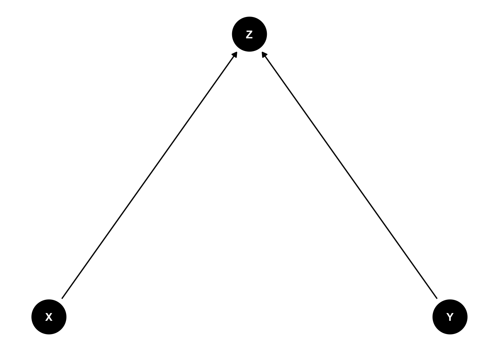
With the given regression model, one asks the question: “What is the value of knowing each leg’s length, after already knowing the other leg’s length?” The answer is: “Not much.”, since they are highly correlated. Both coefficients are not around the expected \(\beta\) and the credible intervals are wide and include the credible value \(0\).
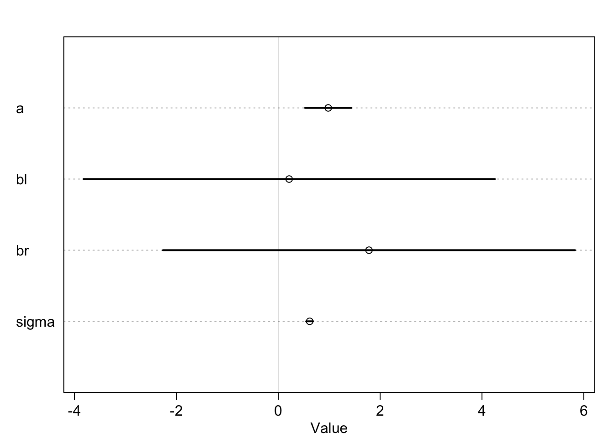
Since the two coefficients are almost perfectly multicollinear
(cor(d$leg_left, d$leg_right)=0.9997458), knowing one leg’s length does not
give us any additional information about the other leg’s length.
Leaving out the right leg length would give the correct result (exercise 11).
4.3.4.2 Example from Westfall 8.4
In the example below, the second prector \(X2\) is a perfect linear function of the first predictor \(X1\).
# Westfall 8.4.
set.seed(12345)
X1 = rnorm(100)
X2 = 2*X1 -1 # Perfect collinearity
Y = 1 + 2*X1 + 3*X2 + rnorm(100,0,1)
summary(lm(Y~X1+X2))##
## Call:
## lm(formula = Y ~ X1 + X2)
##
## Residuals:
## Min 1Q Median 3Q Max
## -2.20347 -0.60278 -0.01114 0.61898 2.60970
##
## Coefficients: (1 not defined because of singularities)
## Estimate Std. Error t value Pr(>|t|)
## (Intercept) -1.97795 0.10353 -19.11 <2e-16 ***
## X1 8.09454 0.09114 88.82 <2e-16 ***
## X2 NA NA NA NA
## ---
## Signif. codes: 0 '***' 0.001 '**' 0.01 '*' 0.05 '.' 0.1 ' ' 1
##
## Residual standard error: 1.011 on 98 degrees of freedom
## Multiple R-squared: 0.9877, Adjusted R-squared: 0.9876
## F-statistic: 7888 on 1 and 98 DF, p-value: < 2.2e-16Let’s look at a 3D plot:
library(plotly)
# Generate data
set.seed(42)
X1 <- rnorm(100)
X2 <- 2 * X1 - 1 # Perfect collinearity
Y <- 1 + 2 * X1 + 3 * X2 + rnorm(100, 0, 1)
# Create the 3D scatter plot with vertical lines
plot_ly() %>%
add_markers(x = X1, y = X2, z = Y,
marker = list(color = Y, colorscale = "Viridis", size = 5),
name = "Data Points") %>%
layout(title = "3D Scatter Plot",
scene = list(xaxis = list(title = "X1"),
yaxis = list(title = "X2"),
zaxis = list(title = "Y")))There is no unique solution for a plane in this case. Infinitely many planes can be defined using the “line” in space. The problem collapses into the simple linear regression problem. One can just plug in the formula for \(X2\) into the model, which yields the identical result:
set.seed(12345)
X1 = rnorm(100)
# Y = 1 + 2*X1 + 3*(2*X1 -1) + rnorm(100,0,1) =
Y = -2 + 8*X1 + rnorm(100,0,1)
summary(lm(Y ~ X1))##
## Call:
## lm(formula = Y ~ X1)
##
## Residuals:
## Min 1Q Median 3Q Max
## -2.20347 -0.60278 -0.01114 0.61898 2.60970
##
## Coefficients:
## Estimate Std. Error t value Pr(>|t|)
## (Intercept) -1.97795 0.10353 -19.11 <2e-16 ***
## X1 8.09454 0.09114 88.82 <2e-16 ***
## ---
## Signif. codes: 0 '***' 0.001 '**' 0.01 '*' 0.05 '.' 0.1 ' ' 1
##
## Residual standard error: 1.011 on 98 degrees of freedom
## Multiple R-squared: 0.9877, Adjusted R-squared: 0.9876
## F-statistic: 7888 on 1 and 98 DF, p-value: < 2.2e-16In reality, you only have one parameter (\(X1\) or \(X2\)) in the case of perfect multicollinearity.
4.4 More than 2 predictors
In practice, you often want more than two predictors in the model. If you listen closely to the research question raised by yourself or your colleagues, often it won’t be clearly stated what goal you want to achieve with the regression model: prediction or explanation.
If we want to be rigorous about the true relationships between variables, we need to think about the causal structure of the variables, as Richard McElreath argues.
In order not to just throw in variables into our regression model and hope for the best, in order to have a fighting chance, we use the information provided in Chapter 5 in the Statistical Rethinking book.
Overall strategy for modeling:
Have a research question and decide how this question can be answered: Quantitatively (experiment or observational study) or qualitatively. Remember: Statistical modeling is not a catch-all approach to turn data into truth. And: We never want to play find-the-right-statistical-test-Bingo. Statistical tests should make sense and not just thrown at data. What does the current literature say about the topic?
Define goal: Prediction or explanation? Prediction: Use everything and every model type you can get your hands on to “best” predict the outcome (neural nets, random forests, etc.). Explanation: How do the variables relate to each other, how do they influence each other? Temporal relationships are important. And we want interpretable models.
Do exploratory data analysis (EDA) to get a feeling for the data:
- This includes (among others) scatterplots, histograms, boxplots, correlation matrices, etc.
- How are the raw correlations/associations between the variables?
- How are the variables distributed?
- Are there outliers?
- Are there missing values and why are the values missing?
- Think about the data generating process. How did the data come about?
- There is no shame in fitting exploratory models too.
Draw a DAG (directed acyclic graph) of the hypthesized relationships between the variables, even though we will not do formal causal inference in this lecture yet (hopefully in the next). The drawn DAG has testable implications (more below). See 5.1.2 in Rethinking. Nicely enough,
dagittyspits out:- The adjustment sets for the regression model based on a DAG. Which variables should I include as covariates in my model, if the DAG is correct?
- The implied conditional dependencies coming from the DAG. These can be checked with the data. It is not a proof that we have the true relationships depicted by the DAG, but it is a good start.
Decide on a statistical model (more on that later).
Define priors for the parameters of the model: If we do not know much, we choose vague priors (i.e., wide range of plausible parameter values). In the best case, priors should be well argued for, especially in a low-data setting (if we do not have many observations).
Prior predictive checks: Does the model produce outcomes (\(Y\)) that are at all plausible? If not, we might have to rethink the model and/or priors.
Fit and check the model: If the models makes certain assumptions, check if these are met. For the classical regression model, see Chapter 4 in Westfall. Posterior predictive check: Check if the model produces new data that looks like the observed data.
Interpret and report the results.
4.4.1 Example in NHANES data
We will now try to invent a not too exotic example with NHANES data. The National Health and Nutrition Examination Survey (NHANES) is a large, ongoing study conducted by the CDC to assess the health and nutritional status of the U.S. population. It combines interviews, physical examinations, and laboratory tests to collect data on demographics, diet, chronic diseases, and physical activity. NHANES uses a complex, nationally representative sampling design, making it a valuable resource for public health research and policy development.
Open data is great and NHANES provides all the data to download for free
without any restrictions or even a registration. For convenience, Randall Pruim
created an R package
called NHANES that contains a cleaned-up version of the
NHANES data from 2009-2012. We will use this and ignore the complex sampling
design for now.
## # A tibble: 6 × 76
## ID SurveyYr Gender Age AgeDecade AgeMonths Race1 Race3 Education
## <int> <fct> <fct> <int> <fct> <int> <fct> <fct> <fct>
## 1 51624 2009_10 male 34 " 30-39" 409 White <NA> High School
## 2 51624 2009_10 male 34 " 30-39" 409 White <NA> High School
## 3 51624 2009_10 male 34 " 30-39" 409 White <NA> High School
## 4 51625 2009_10 male 4 " 0-9" 49 Other <NA> <NA>
## 5 51630 2009_10 female 49 " 40-49" 596 White <NA> Some College
## 6 51638 2009_10 male 9 " 0-9" 115 White <NA> <NA>
## # ℹ 67 more variables: MaritalStatus <fct>, HHIncome <fct>, HHIncomeMid <int>,
## # Poverty <dbl>, HomeRooms <int>, HomeOwn <fct>, Work <fct>, Weight <dbl>,
## # Length <dbl>, HeadCirc <dbl>, Height <dbl>, BMI <dbl>,
## # BMICatUnder20yrs <fct>, BMI_WHO <fct>, Pulse <int>, BPSysAve <int>,
## # BPDiaAve <int>, BPSys1 <int>, BPDia1 <int>, BPSys2 <int>, BPDia2 <int>,
## # BPSys3 <int>, BPDia3 <int>, Testosterone <dbl>, DirectChol <dbl>,
## # TotChol <dbl>, UrineVol1 <int>, UrineFlow1 <dbl>, UrineVol2 <int>, …## [1] 2009_10 2011_12
## Levels: 2009_10 2011_12## [1] "ID" "SurveyYr" "Gender" "Age"
## [5] "AgeDecade" "AgeMonths" "Race1" "Race3"
## [9] "Education" "MaritalStatus" "HHIncome" "HHIncomeMid"
## [13] "Poverty" "HomeRooms" "HomeOwn" "Work"
## [17] "Weight" "Length" "HeadCirc" "Height"
## [21] "BMI" "BMICatUnder20yrs" "BMI_WHO" "Pulse"
## [25] "BPSysAve" "BPDiaAve" "BPSys1" "BPDia1"
## [29] "BPSys2" "BPDia2" "BPSys3" "BPDia3"
## [33] "Testosterone" "DirectChol" "TotChol" "UrineVol1"
## [37] "UrineFlow1" "UrineVol2" "UrineFlow2" "Diabetes"
## [41] "DiabetesAge" "HealthGen" "DaysPhysHlthBad" "DaysMentHlthBad"
## [45] "LittleInterest" "Depressed" "nPregnancies" "nBabies"
## [49] "Age1stBaby" "SleepHrsNight" "SleepTrouble" "PhysActive"
## [53] "PhysActiveDays" "TVHrsDay" "CompHrsDay" "TVHrsDayChild"
## [57] "CompHrsDayChild" "Alcohol12PlusYr" "AlcoholDay" "AlcoholYear"
## [61] "SmokeNow" "Smoke100" "Smoke100n" "SmokeAge"
## [65] "Marijuana" "AgeFirstMarij" "RegularMarij" "AgeRegMarij"
## [69] "HardDrugs" "SexEver" "SexAge" "SexNumPartnLife"
## [73] "SexNumPartYear" "SameSex" "SexOrientation" "PregnantNow"The variable descriptions can be found here. As an exercise, please do exploratory data analysis; see exercise 14.
4.4.1.1 Research question
Does Physical activity (PhysActive) influence the average systolic blood pressure (BPSysAve) in adults (\(\ge 20\) years)?
We propose the following relationships among the variables (and limit ourselves to 4 covariates):
df <- NHANES # shorter
# Define the DAG
dag <- dagitty('dag {
PhysActive -> BPSysAve
Age -> PhysActive
Age -> BPSysAve
PhysActive -> BMI
BMI -> BPSysAve
Gender -> PhysActive
Gender -> BMI
Gender -> BPSysAve
}')
# Set node coordinates for a nice layout
dagitty::coordinates(dag) <- list(
x = c(PhysActive = 0, BPSysAve = 2, Age = 1, BMI = 1, Gender = 0.5),
y = c(PhysActive = 1, BPSysAve = 1, Age = 2, BMI = 1.5, Gender = 2)
)
# Plot the DAG with larger node labels and bubbles
ggdag(dag) +
theme_minimal() +
geom_dag_point(size = 20, color = "black") + # Increase node size
geom_dag_text(size = 2.5, color = "white") + # Increase label size
ggtitle("Hypothesized Relationships") +
theme(plot.title = element_text(hjust = 0.5))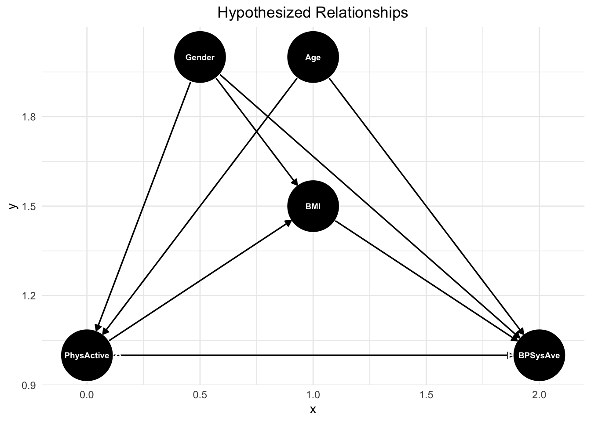
This DAG illustrates the hypothesized relationships between physical activity, age, BMI, gender, and blood pressure (BPSysAve). Physical activity potentially directly influences blood pressure, as regular exercise is hypothesized to improve cardiovascular health and lower blood pressure. Age has a direct effect on blood pressure, as arterial stiffness and other age-related physiological changes contribute to higher blood pressure over time. BMI also plays a role, with higher BMI being associated with increased blood pressure due to greater vascular resistance and metabolic factors. Additionally, gender affects blood pressure, as men and women often have different baseline levels due to hormonal and physiological differences.
There are also indirect pathways that contribute to these relationships. Age influences both physical activity and BMI, as older individuals tend to be less active and may experience weight gain due to metabolic changes (confounder). BMI and physical activity are also interconnected, physical activity influences BMI, further influencing blood pressure (mediation). Gender plays a role in both BMI and physical activity, as men and women tend to have different average BMI distributions and physical activity levels due to both biological and societal factors (confounder).
Note, that we have a very large sample size (6,919 people). As exercise for later, we randomly select 50 to 100 participants and repeat the analysis. This would also give us the opportunity to study how well we can infer the relationships in the larger sample from the smaller one, which could be an eye-opener.
Which variables should be included in the model?
## { Age, Gender }## Age _||_ BMI | Gndr, PhyA
## Age _||_ GndrThe one adjustment set (using the command adjustmentSets) proposed by dagitty tells us that
we should include age and gender as covariates in the model (in addition to PhysActive),
if the DAG is correct.
Note that we do not include all three covariables in the model here, just two of them.
If the DAG is correct, this would imply some conditional independencies
(using the command impliedConditionalIndependencies) .
We should probably check them to see how this is done:
First, we need to test, if age and BMI are independent, if we condition on gender and physical activity; i.e., just add the to the regression model. This is the case:
# Age _||_ BMI | Gnder, PhyA
summary(lm(Age ~ BMI + Gender + PhysActive, data = df %>% dplyr::filter(Age >= 20)))##
## Call:
## lm(formula = Age ~ BMI + Gender + PhysActive, data = df %>% dplyr::filter(Age >=
## 20))
##
## Residuals:
## Min 1Q Median 3Q Max
## -31.53 -13.92 -0.97 12.23 36.67
##
## Coefficients:
## Estimate Std. Error t value Pr(>|t|)
## (Intercept) 49.31700 0.94791 52.027 < 2e-16 ***
## BMI 0.04997 0.02982 1.676 0.09380 .
## Gendermale -1.18815 0.39311 -3.022 0.00252 **
## PhysActiveYes -5.83325 0.39761 -14.671 < 2e-16 ***
## ---
## Signif. codes: 0 '***' 0.001 '**' 0.01 '*' 0.05 '.' 0.1 ' ' 1
##
## Residual standard error: 16.62 on 7168 degrees of freedom
## (63 observations deleted due to missingness)
## Multiple R-squared: 0.03282, Adjusted R-squared: 0.03242
## F-statistic: 81.09 on 3 and 7168 DF, p-value: < 2.2e-16The implication can be confirmed.
Interpretation: If we know gender and physical activity (yes/no) of a person, BMI does not offer any additional information about age.
Second, I would go out on a limb and say that there is no relationship between age and gender, at least not in a statistically relevant sense.
4.4.1.2 Goal
The goal is to better understand (explain) the relationship between physical activity and blood pressure while considering age, BMI and gender. I would suggest that in most cases relevant for us, one wants to understand relationships rather to predict an outcome.
4.4.1.4 Statistical model
The outcome is a continuous variable (blood pressure), the exposure is a binary variable (physical activity yes/no). Surprise, surprise, we could try a multiple linear regression model here.
As a first approximation, let’s assume BPSysAve is (sufficiently) normally distributed, which can be critized. Let’s quickly visualize the distribution ofBPSysAve and overlay a normal density with paramaters estimated from the data (\(\mu\) sample mean of BPSysAve, \(\sigma\) sample standard deviation of BPSysAve):
df_age <- df %>% dplyr::filter(Age >= 20)
df_age %>%
ggplot(aes(x = BPSysAve)) +
geom_histogram(aes(y = after_stat(density)),
bins = 30, fill = "lightblue", alpha = 0.6) +
geom_density(color = "blue", linewidth = 1) +
stat_function(
fun = dnorm,
args = list(mean = mean(df_age$BPSysAve, na.rm = TRUE),
sd = sd(df_age$BPSysAve, na.rm = TRUE)),
color = "red", linewidth = 1, linetype = "dashed"
) + # Theoretical normal curve
labs(
x = "Systolic Blood Pressure (BPSysAve)",
y = "Density",
title = "Distribution of Systolic Blood Pressure with Normal Curve"
) +
theme_minimal() +
theme(plot.title = element_text(hjust = 0.5))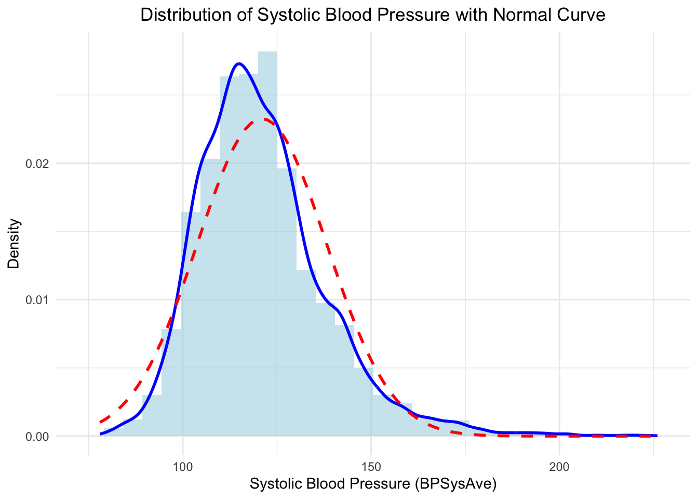 Not quite normal, but we will assume it for now.
4.4.1.5 Priors
Now, let’s write down the statistical model. We choose vague priors since we have a vast data set. The advantage of the Bayesian approach remains (that we have a fully probabilistic model). Admitted, using Bayes is much more technical, at least at first glance.
We center age again, which makes the interpretation of the intercept easier.
The intercept (\(\beta_0\)) is the expected value of BPSysAve for a person of average age, not physically active (reference level of the factor) and female gender (reference level of the factor).
The coefficient for PhysActive (\(\beta_1\)) is the expected difference in BPSysAve between a physically active person and a non-physically active person, holding all other predictors constant. BPSysAve ranges from 78 to 226 mmHg. If we do not know enough, we can just take a very vague prior for now: \(\beta_1 \sim \text{Normal}(0, 50)\). With 95% probability, the effect of physical activity on BPSysAve is between -100 and 100.
\(beta_2\): The expected change in BPSysAve for a one-year increase in age (above the mean age), holding all other predictors constant. \(\beta_2 \sim \text{Normal}(0, 10)\). This effect should be comparatively small, since we are dealing with a one-year increase in age. We could further standardize age, then the effect would be in relation to one standard deviations increase in age.
\(\sigma\): The standard deviation of the residuals. \(\sigma \sim \text{Uniform}(0, 50)\). We use a vague prior. 95% of the residuals are between -100 and 100. This seems plausible enough.
\[\begin{eqnarray*} BPSysAve_i &\sim& \text{Normal}(\mu_i, \sigma)\\ \mu_i &=& \beta_0 + \beta_1 \cdot PhysActive + \beta_2 \cdot Age_{centered} + \beta_3 \cdot Gender\\ \beta_0 &\sim& \text{Normal}(140, 20)\\ \beta_1 &\sim& \text{Normal}(0, 50)\\ \beta_2 &\sim& \text{Normal}(0, 10)\\ \beta_3 &\sim& \text{Normal}(0, 10)\\ \sigma &\sim& \text{Uniform}(0, 50) \end{eqnarray*}\]
Note that age and gender are not influenced by each other.
4.4.1.6 Prior Predictive Checks
Now we simply draw from the priors and thereby generate systolic blood pressure values.
# Prior predictive checks
set.seed(123)
n_sims <- dim(df_age)[1] # 7235 participants
beta_0_vec <- rnorm(n_sims, 140, 20)
beta_1_vec <- rnorm(n_sims, 0, 50)
beta_2_vec <- rnorm(n_sims, 0, 10)
beta_3_vec <- rnorm(n_sims, 0, 10)
sigma_vec <- runif(n_sims, 0, 50)
BPSysAve_sim <- rnorm(n_sims, beta_0_vec + beta_1_vec + beta_2_vec + beta_3_vec, sigma_vec)This yields also negative values (please verify) for* BPSysAve*, which is not plausible.
In exercise 15 we will play around with the priors until the prior predictive check producues plausible values. Admitted, one should probably not look at the distribution of data while doing this. On the other hand, we could have just Googled the distribution of blood pressure values. This is the result:
set.seed(123)
n_sims <- dim(df_age)[1] # 7235
beta_0_vec <- rnorm(n_sims, 120, 7)
beta_1_vec <- rnorm(n_sims, 0, 10)
beta_2_vec <- rnorm(n_sims, 5, 10)
beta_3_vec <- rnorm(n_sims, 0, 10)
sigma_vec <- runif(n_sims, 0, 20)
BPSysAve_sim <- rnorm(n_sims, beta_0_vec + beta_1_vec + beta_2_vec + beta_3_vec, sigma_vec)
length(BPSysAve_sim) # 7235## [1] 7235df_sim_vs_obs <- data.frame(
BPSysAve_sim = BPSysAve_sim,
BPSysAve_obs = df_age$BPSysAve
)
# Combine observed and simulated values into one long-format data frame
df_long <- df_sim_vs_obs %>%
tidyr::pivot_longer(cols = everything(),
names_to = "Type", values_to = "BPSysAve") %>%
mutate(Type = factor(Type, levels = c("BPSysAve_obs", "BPSysAve_sim"),
labels = c("Observed", "Simulated")))
# Plot densities of both observed and simulated values
ggplot(df_long, aes(x = BPSysAve, fill = Type)) +
geom_density(alpha = 0.5) + # Semi-transparent density curves
labs(
x = "Systolic Blood Pressure",
y = "Density",
title = "Observed vs. Simulated Systolic Blood Pressure"
) +
scale_fill_manual(values = c("Observed" = "blue", "Simulated" = "red")) +
theme_minimal() +
theme(plot.title = element_text(hjust = 0.5))## Warning: Removed 264 rows containing non-finite outside the scale range
## (`stat_density()`).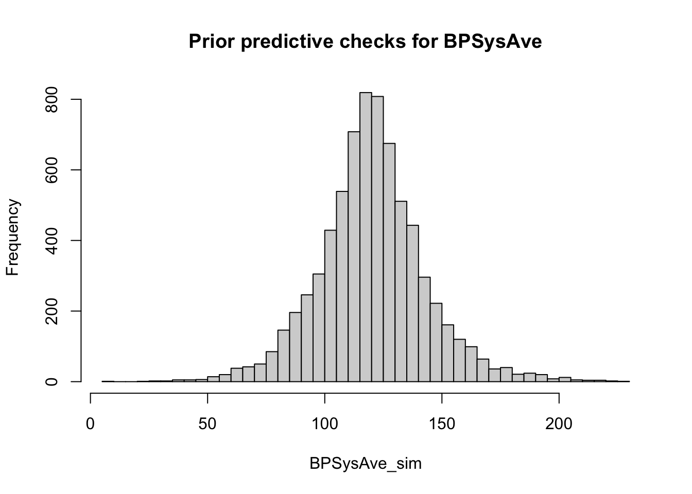
Looks decent. Not quite there yet. The blood pressure values have a smaller variances and are skewed. Let’s nevertheless fit the model.
4.4.1.7 Fit and check model
We use quap for the model fitting.
##
## Attaching package: 'data.table'## The following objects are masked from 'package:lubridate':
##
## hour, isoweek, mday, minute, month, quarter, second, wday, week,
## yday, year## The following objects are masked from 'package:dplyr':
##
## between, first, last## The following object is masked from 'package:purrr':
##
## transposedf <- NHANES
df <- as.data.table(df)
# Compute age mean for centering
Age_mean <- mean(df[Age >= 20,]$Age, na.rm = TRUE) # adults
# Filter age
df <- df %>% dplyr::filter(Age >= 20) %>%
dplyr::select(BPSysAve, PhysActive, Age, Gender, BMI) %>%
drop_na()
dim(df) # 6919 7## [1] 6919 5## [1] 0# Fit model
m_NHANES <- quap(
alist(
BPSysAve ~ dnorm(mu, sigma),
mu <- beta_0 + beta_1[PhysActive] + beta_2 * (Age - Age_mean) + beta_3[Gender],
beta_0 ~ dnorm(120, 7),
beta_1[PhysActive] ~ dnorm(0, 10),
beta_2 ~ dnorm(5, 10),
beta_3[Gender] ~ dnorm(0, 10),
sigma ~ dunif(0, 20)
),
data = df
)
precis(m_NHANES, depth = 2)## mean sd 5.5% 94.5%
## beta_0 120.4849312 5.73478808 111.3196322 129.6502302
## beta_1[1] 0.4483506 5.76628806 -8.7672915 9.6639926
## beta_1[2] -0.2878748 5.76604721 -9.5031319 8.9273823
## beta_2 0.4194979 0.01115025 0.4016776 0.4373181
## beta_3[1] -1.7776671 5.76694920 -10.9943658 7.4390315
## beta_3[2] 2.7074118 5.76700142 -6.5093703 11.9241939
## sigma 15.4150610 0.13103997 15.2056338 15.6244882# We want to know the expected difference for the levels of PhysActive and Gender:
# (which is not directly visible in the summary)
post <- extract.samples(m_NHANES)
post$diff_PhysActive <- post$beta_1[,2] - post$beta_1[,1]
post$diff_G <- post$beta_3[,2] - post$beta_3[,1]
library(conflicted)
conflicts_prefer(posterior::sd)## [conflicted] Will prefer posterior::sd over any other package.## mean sd 5.5% 94.5% histogram
## beta_0 120.5532300 5.79551096 111.3020105 129.8048366 ▁▁▃▇▇▃▁▁▁
## beta_2 0.4196907 0.01127082 0.4016948 0.4374156 ▁▁▁▁▃▇▇▃▁▁▁
## sigma 15.4161590 0.13110866 15.2076867 15.6279605 ▁▁▁▃▇▇▅▂▁▁
## beta_1[1] 0.3487591 5.80968339 -8.9591156 9.5907618 ▁▁▁▃▇▇▃▁▁▁
## beta_1[2] -0.3866548 5.81170379 -9.7471463 8.8316285 ▁▁▁▃▇▇▃▁▁▁
## beta_3[1] -1.7463108 5.77133890 -11.1387559 7.3752075 ▁▁▂▅▇▅▂▁▁▁
## beta_3[2] 2.7422693 5.77545948 -6.6404321 11.8947750 ▁▁▂▅▇▅▂▁▁
## diff_PhysActive -0.7354140 0.37500248 -1.3324591 -0.1257030 ▁▁▃▇▃▁▁
## diff_G 4.4885801 0.37263071 3.8813342 5.0880217 ▁▂▇▇▁▁The summary tells us that diff_PhysActive is \(-0.74\) with a large proportion
of the posterior \(<0\). Please research if this is a clinically relevant difference.
My guess is: no.
4.4.1.8 Fit model using lm (Frequentist approach)
We can also fit the model using the Frequentist approach. No priors. The results should be very similar due to the large sample size.
## [1] 6919 5df <- df %>% mutate(Age_center = Age - mean(Age))
mod <- lm(BPSysAve ~ PhysActive + Age_center + Gender, data = df)
summary(mod)##
## Call:
## lm(formula = BPSysAve ~ PhysActive + Age_center + Gender, data = df)
##
## Residuals:
## Min 1Q Median 3Q Max
## -55.736 -9.245 -1.160 8.254 103.561
##
## Coefficients:
## Estimate Std. Error t value Pr(>|t|)
## (Intercept) 119.14860 0.32495 366.665 <2e-16 ***
## PhysActiveYes -0.73693 0.37750 -1.952 0.051 .
## Age_center 0.41949 0.01115 37.610 <2e-16 ***
## Gendermale 4.48810 0.37134 12.086 <2e-16 ***
## ---
## Signif. codes: 0 '***' 0.001 '**' 0.01 '*' 0.05 '.' 0.1 ' ' 1
##
## Residual standard error: 15.42 on 6915 degrees of freedom
## Multiple R-squared: 0.1875, Adjusted R-squared: 0.1872
## F-statistic: 532 on 3 and 6915 DF, p-value: < 2.2e-16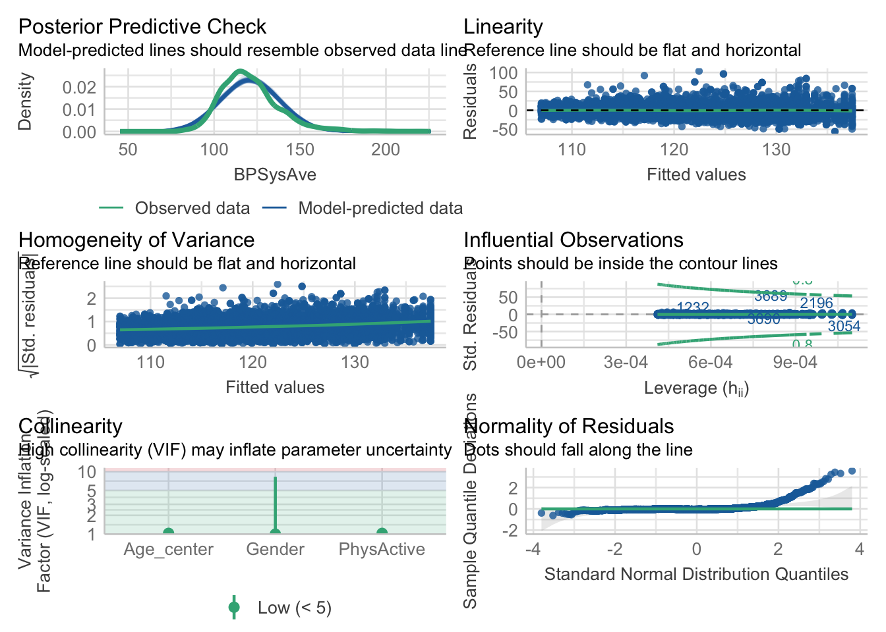
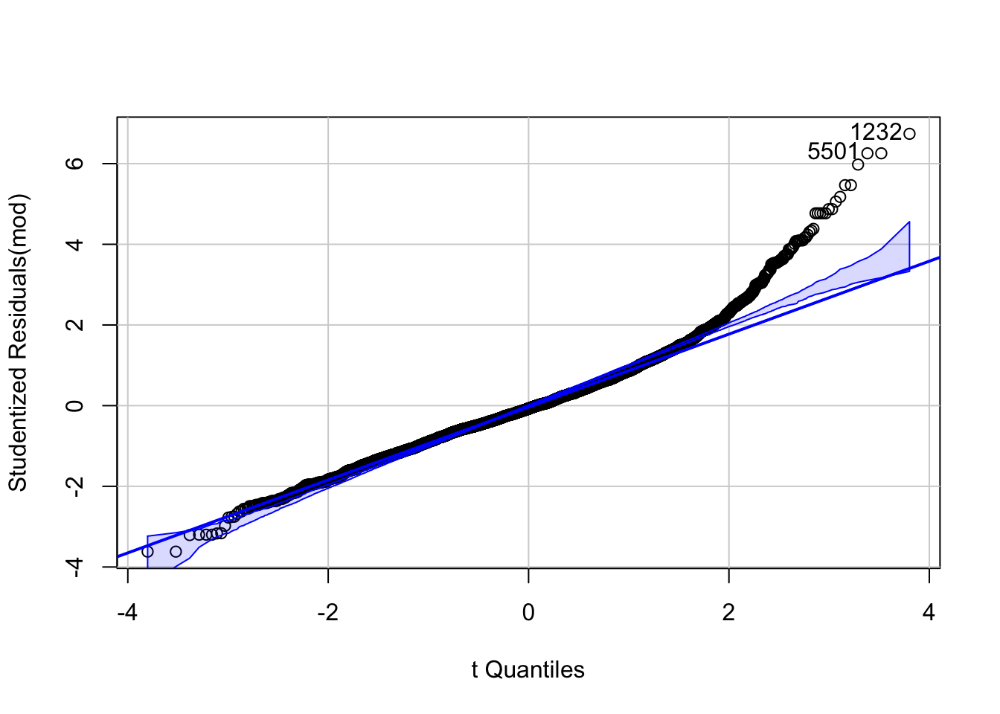
## [1] 1232 5501The results are similar to the Bayesian approach. In the summary output we see that the effect of physical activity is \(-0.73693\) with a small \(p\)-value (\(0.051\)). This is one example for the absurdity of strict cutoffs for \(p\)-values. The other coefficients including the estimate for \(\sigma\) are also similar. It’s alsways a good idea to double-check.
Model fit could be better, the model thinks the blood pressure is normally distributed. There also seems to be some heteroscadasticity and the residuals are not normally distributed.
Usually, one would fit this model by throwing in all variables into the model, including BMI. Let’s see if this approach changes the results:
##
## Call:
## lm(formula = BPSysAve ~ PhysActive + Age + Gender + BMI, data = df)
##
## Residuals:
## Min 1Q Median 3Q Max
## -56.295 -9.414 -1.043 8.004 102.952
##
## Coefficients:
## Estimate Std. Error t value Pr(>|t|)
## (Intercept) 91.38776 1.04337 87.589 <2e-16 ***
## PhysActiveYes -0.22870 0.37854 -0.604 0.546
## Age 0.41728 0.01108 37.658 <2e-16 ***
## Gendermale 4.43779 0.36887 12.031 <2e-16 ***
## BMI 0.27237 0.02790 9.764 <2e-16 ***
## ---
## Signif. codes: 0 '***' 0.001 '**' 0.01 '*' 0.05 '.' 0.1 ' ' 1
##
## Residual standard error: 15.32 on 6914 degrees of freedom
## Multiple R-squared: 0.1986, Adjusted R-squared: 0.1981
## F-statistic: 428.3 on 4 and 6914 DF, p-value: < 2.2e-16## [1] 1232 5501This changed the results notably. Before, the effect of physical activity was \(-0.73693\) with a rather small \(p\)-value, now it is \(-0.22870\) with a \(p\)-value ten times as large.
Remember this: The interpretation of a whole paper could change by falsely including an additional variable (in this case BMI).
4.4.1.9 Improve model
Now, that we have seen that the model fit is probably not sufficient, we could try to improve it.
First order of business is the non-normality of the blood pressure values (outcome). The model predicts normally distributed values, which is not the case. It seems that the blood pressure values are right-skewed.
Let’s try a log-normal distribution for the outcome variable, which only takes positive values and is skewed.
We would further try to model \(\sigma\) as a linear function of \(\mu\). For higher expected values of BPSysAve, we would expect higher variability. Hence, we try to explicitely model heteroscadasticity.
Note, that we have no problem with adding parameters to the model because of the large sample size.
See exercise 16.
\[\begin{eqnarray*} BPSysAve_i &\sim& \text{Log-Normal}(\mu_i, \sigma_i)\\ \sigma_i &=& \text{exp}(\beta_4 + \beta_5 \cdot \mu_i)\\ \mu_i &=& \beta_0 + \beta_1 \cdot PhysActive + \beta_2 \cdot Age_{centered} + \beta_3 \cdot Gender\\ \beta_0 &\sim& \text{Normal}(140, 20)\\ \beta_1 &\sim& \text{Normal}(0, 50)\\ \beta_2 &\sim& \text{Normal}(0, 10)\\ \beta_3 &\sim& \text{Normal}(0, 10)\\ \beta_4 &\sim& \text{Normal}(0, 10)\\ \beta_5 &\sim& \text{Uniform}(0, 50) \end{eqnarray*}\]
We now allow the standard deviation \(\sigma_i\) to be different for different values of the mean.
With exp() we ensure that \(\sigma_i\) is positive.
This time, we assume: \(log(BPSysAve_i) \sim \text{Normal}(\mu_i, \sigma_i)\). That’s what it means
to be log-normally distributed.
Fit improved model
## [1] 0set.seed(122)
m_NHANES_lnorm <- quap(
alist(
BPSysAve ~ dlnorm(lmu, lsd),
lsd <- exp(beta_4 + beta_5 * lmu),
lmu <- beta_0 + beta_1[PhysActive] + beta_2 * (Age - Age_mean) + beta_3[Gender],
beta_0 ~ dnorm(140, 10), #
beta_1[PhysActive] ~ dnorm(0, 10), #
beta_2 ~ dnorm(0, 10),
beta_3[Gender] ~ dnorm(0, 10), #
beta_4 ~ dnorm(0, 10), #
beta_5 ~ dnorm(0, 10) #
),
data = df,
start = list(beta_0 = 140, beta_1 = c(0.5, 0), beta_2 = 0, beta_3 = c(0.5, 0), beta_4 = 1, beta_5 = 0)
)
precis(m_NHANES_lnorm, depth = 2)## mean sd 5.5% 94.5%
## beta_0 69.940815482 7.0688162635 58.643481822 81.238149141
## beta_1[1] -33.089453949 6.1218905701 -42.873417461 -23.305490436
## beta_1[2] -33.092785217 6.1218905660 -42.876748723 -23.308821711
## beta_2 0.003334919 0.0000845877 0.003199732 0.003470107
## beta_3[1] -32.083866696 6.1249525109 -41.872723781 -22.295009611
## beta_3[2] -32.042155145 6.1249525254 -41.831012254 -22.253298037
## beta_4 -14.545840087 0.7396301298 -15.727911886 -13.363768287
## beta_5 2.594743962 0.1546084882 2.347649737 2.841838187# difference in levels of PhysActive and Gender (catorical variables):
post_lnorm <- extract.samples(m_NHANES_lnorm)
post_lnorm$diff_PhysActive <- post_lnorm$beta_1[,2] - post_lnorm$beta_1[,1]
post_lnorm$diff_G <- post_lnorm$beta_3[,2] - post_lnorm$beta_3[,1]
precis(post_lnorm, depth = 2)## mean sd 5.5% 94.5%
## beta_0 69.802740693 7.085286e+00 58.450093685 8.100613e+01
## beta_2 0.003333900 8.420378e-05 0.003198976 3.469766e-03
## beta_4 -14.557397328 7.340126e-01 -15.730856478 -1.339366e+01
## beta_5 2.597170489 1.534331e-01 2.353734581 2.842822e+00
## beta_1[1] -33.013184105 6.159037e+00 -42.880222934 -2.329850e+01
## beta_1[2] -33.016534396 6.159079e+00 -42.884893477 -2.330076e+01
## beta_3[1] -32.022042725 6.166508e+00 -41.656953623 -2.200235e+01
## beta_3[2] -31.980336296 6.166495e+00 -41.611161302 -2.196006e+01
## diff_PhysActive -0.003350291 2.668752e-03 -0.007636024 9.712922e-04
## diff_G 0.041706430 2.640623e-03 0.037460961 4.588615e-02
## histogram
## beta_0 ▁▁▁▁▂▅▇▇▃▂▁▁▁
## beta_2 ▁▁▁▁▃▇▇▇▃▂▁▁▁▁
## beta_4 ▁▁▁▂▅▇▇▃▂▁▁▁
## beta_5 ▁▁▁▁▂▅▇▇▅▂▁▁▁▁
## beta_1[1] ▁▁▁▂▅▇▅▂▁▁
## beta_1[2] ▁▁▁▂▅▇▅▂▁▁
## beta_3[1] ▁▁▂▅▇▅▂▁▁▁
## beta_3[2] ▁▁▂▅▇▅▂▁▁▁
## diff_PhysActive ▁▁▁▃▇▇▅▂▁▁▁
## diff_G ▁▁▁▂▅▇▇▃▁▁▁diff_PhysActive is now \(-0.003350291\) with a very tight credible interval
containing \(0\) as a credible effect. The model is pretty sure, that the effect
is practically zero.
Let’s vizualize the posterior predictive distributions of 100 samples:
# posterior predictive checks
sample_BP <- sim(m_NHANES_lnorm, n = 1000)
# Convert the first 100 rows of the posterior samples into a long format for ggplot
df_posterior <- as.data.frame(t(sample_BP[1:100,])) %>%
pivot_longer(cols = everything(), names_to = "Simulation", values_to = "BPSysAve_sim")
# Create the plot
ggplot() +
geom_density(data = df_posterior, aes(x = BPSysAve_sim, group = Simulation),
color = "lightblue", alpha = 0.05) +
geom_density(data = df, aes(x = BPSysAve), color = "green", linewidth = 1.2) +
labs(title = "Density Estimation: Original vs. Posterior Samples",
x = "Systolic Blood Pressure",
y = "Density") +
theme_minimal() +
theme(plot.title = element_text(hjust = 0.5))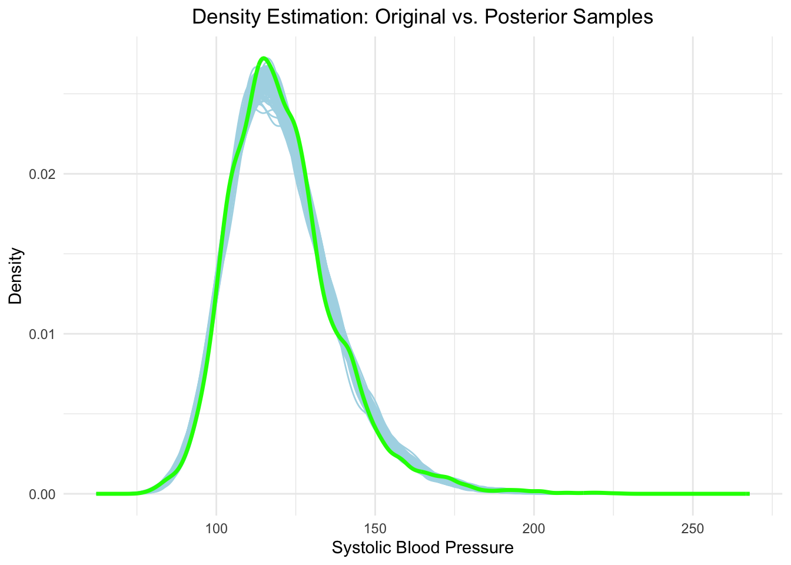
With respect to the distribution of blood pressure, the model looks much better now. Note, that we did not assume that the residuals are normally distributed, neither did we assume homoscedasticity (on the contrary).
See exercise 17.
4.4.1.10 Interpret and report results
Summarizing the results, we find the expected direction of association in our first model. The effect of physical activity on blood pressure was negative. After improving the model fit, we concluded that the small but clinically irrelevant effect from the first model dissapeared. It would be interesting to see how other variables containing more information influence blood pressure, like PhysActiveDays (Number of days in a typical week that participant does moderate or vigorousintensity activity).
4.4.2 Concluding remarks
The NHANES example was a somewhat realistic instance of a multiple regression model which could easily be encountered in practice. In a Master thesis, we are often in a low-data setting with 20-150 observations. Here, the priors are much more important.
Exercise 18 asks you to repeat the analysis with a smaller sample size.
We saw that we can readily adapt the model, if assumptions of the classical
linear regression model are violated. In our case, we had to model the outcome
as log-normal in order to allow for the model to predict skewed blood pressure values.
In addition, we explicitly modeled heteroscedasticity by allowing the standard deviation
to grow with the mean. Theoretically, one could build arbitrarily complex models
this way. Of course, syntax problems and convergence issues could arise.
Even in this example some starting values were not fit for purpose, which is why
I had to add the set.seed() command in the improved model.
4.5 Exercises
[E] Easy, [M] Medium, [H] Hard
(Some) solutions to exercises can be found in the git-repo here.
4.5.2 [E] Exercise 2
Consider the model equations from above where we used polynomial regression to model the relationship between weight and height:
- Draw the model hierarchy for the model.
4.5.3 [H] Exercise 3
Invent a data set (or use the first 3 lines of a previous data set) with 3 observations of \(Y\) and \(X_1, X_2\) and \(X_3\). You have a data frame with 3 rows and 4 columns.
- Fit a model with \(Y\) as the dependent variable and \(X_1, X_2, X_3\) as predictors.
- How big is \(R^2\)?
- Could you have calulated this without
lmand R?
4.5.4 [E] Exercise 4
Go back to the section about the interaction term in the linear model.
- Use the code provided.
- Standardise the predictors. How are the \(\beta\)s changing and what is their interpration now?
- Change the relative sizes of the true but usually unknown \(\beta\)s. What happens to the estimates and the graph?
- What happens if you change the error term and increase or decrease its variance?
4.5.5 [E] Exercise 5
Draw the interaction plot from the section about the interaction plot for the case when there is no interaction, i.e. \(\beta_3 = 0\).
4.5.6 [M] Exercise 6
Go back to the model assumptions checks above.
- Create the same two plots for the simple mean model without predictors, just with the intercept.
- Which model fits the data better according to these posterior predictive checks?
4.5.7 [E] Exercise 7
Go back to the Simpson’s paradox section.
- Invent your own example for the pipe, fork and collider.
4.5.8 [M] Exercise 8
- Take a data set of your choosing with many columns, say 10 or so, either from the internet or from R (if available)
- Fit a model for an arbitrary outcome, add more and more variables to predict the outcome and verify that the \(R^2\) increases.
4.5.9 [M] Exercise 9
Exponential curve fitting. Go back to the section about adding a transformed predictor in the Frequentist
setting. Hint: You can use the optim function in R.
- Assume the relationship between weight and height looks like this: \(height_i = \alpha + \beta_1 e^{\beta_2 weight_i}\).
- Use R and the least squares method to estimate the parameters \(\alpha, \beta_1, \beta_2\).
- Note that the sum of squared errors is this: \(\sum_{i=1}^n (height_i - \alpha - \beta_1 e^{\beta_2 weight_i})^2\).
- What happens if you do not constrain the parameters \(\beta_1\) and \(\beta_2\) to be negative?
- Calculate the \(R^2\) for this model.
4.5.10 [E] Exercise 10
Let’s try to verify if Berkson’s paradox (which we have mentioned in the collider-section) also works for three variables in a sum score.
- Now, we assume some college admits only applicants in the top 20% of a score consisting of the sum of three variables: \(W, X, Z\) (grade point average, math score, verbal score).
- All three scores are individually normally distributed with mean 100 and standard deviation 15.
- Calculate the correlation matrix
cor()of all students and the admitted students. - Are any of the three variables correlated?
- Plot a scatterplot of the math score and the verbal score und color the points according to being admitted or not. You can add trendlines for the two groups.
4.5.11 [E] Exercise 11
Go back to the multicollinearity section and the example from McElreath 6.1.
- Verify that the coefficient is correct when leaving out the right leg length from the model.
4.5.12 [M] Exercise 12
Go backt to the interpretation of the intercept in the quadratic height model above.
- Why is the intercept not equal to the sample mean of the heights?
4.5.13 [H] Exercise 13
Go back to the section about the fork and the example about smoking at the end.
- Draw a DAG for this example.
- Create data in R, where you assume that the probability of carrying a lighter is higher in smokers, the probability of lung cancer is higher in smokers.
- Show that the association between carrying a lighter and lung cancer disappears when conditioning on smoking.
- You may also invent an example relevant to the field of physiotherapy.
4.5.14 [H] Exercise 14
- Perform extensive EDA on the NHANES data set implemented in R. See above.
4.5.15 [H] Exercise 15
Go back to the NHANES model above.
- Play around with the priors until the prior predictive check produces plausible values.
4.5.16 [M] Exercise 16
Go to the improved model fit of our NHANES example above.
- Draw the model hierarchy for the model.
4.5.17 [H] Exercise 17
Go back to the improved model fit of our NHANES example above.
- Draw observed vs. model-predicted blood pressure values.
- add the \(y=x\) line to the plot.
- Is the fit better compared to the first model?
4.5.18 [H] Exercise 18
Go back to the NHANES example above.
- Repeat the NHANES analysis with a smaller sample size.
- Draw 50-100 rows randomly from the adult NHANES data set we have used for the full analysis.
- What do you observe?